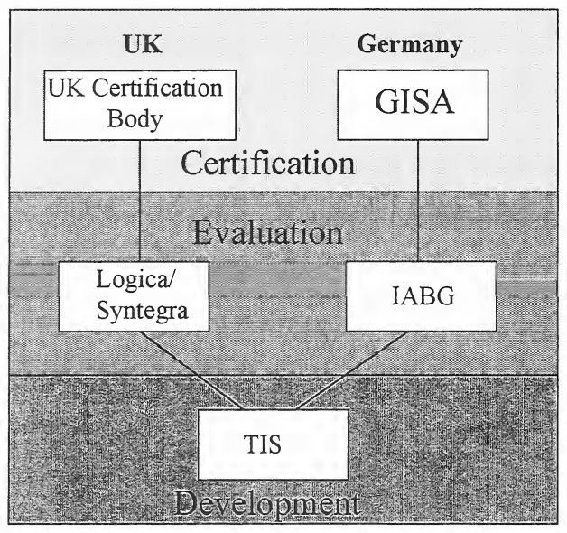

NIST IR 6068 日本語訳
英語タイトル : Report on the TMACH Experiment日本語タイトル : TMACH 実験に関する報告書
公開日 : 1997-07-01
原文URL : https://csrc.nist.gov/pubs/ir/6068/final
原本 PDF : https://doi.org/10.6028/NIST.IR.6068
訳文 : 有志による非公式の日本語訳（AI による翻訳とレビュー）。全 532 段落を翻訳済み（原文取得日 : 2026-11-16）
[要約] NIST IR 6068 は、セキュリティ評価の代替的な手法を探るために米国の ARPA の資金で行われた多国間の評価実験について、その結果を記述する報告書です。この実験は、TCSEC の B3 を目標に開発された Trusted Mach（TMach）オペレーティングシステムを、英国とドイツにおける欧州の ITSEC 評価で高い保証レベル（E5）により評価するもので、TCSEC と ITSEC の評価の違いを具体的な評価経験に基づいて理解することが目的の一つとされています。報告書は、実験の目的と進め方、各関係者の役割、米国と英国・ドイツの評価プロセスの比較、開発プロセスと評価所見、TCSEC B3 と ITSEC E5/F-B3 の比較などを扱っています。また、ITSEC や米国の連邦基準、コモンクライテリアへの影響を述べたうえで、結論として得られた利益、特定された問題、コモンクライテリア策定への提言を示しています。
NISTIR 6068
NISTIR 6068
Report on the TMACH Experiment
TMACH 実験に関する報告書
Ellen Flahavin (NIST)
Goswin Eisen (IABG)
Steve Hill (Logica)
Heribert Spindler (IABG)
Julian Straw (Syntegra)
Andy Webber (Logica)
Ellen Flahavin (NIST)
Goswin Eisen (IABG)
Steve Hill (Logica)
Heribert Spindler (IABG)
Julian Straw (Syntegra)
Andy Webber (Logica)
U.S. DEPARTMENT OF COMMERCE
Technology Administration
National Institute of Standards and Technology
Information Technology Laboratory
Gaithersburg, MD 20899-0001
米国商務省
技術管理局
国立標準技術研究所
情報技術研究所
Gaithersburg, MD 20899-0001
July 1997
1997年7月
NISTIR 6068
NISTIR 6068
Report on the TMACH Experiment
TMACH 実験に関する報告書
Ellen Flahavin (NIST)
Goswin Eisen (IABG)
Steve Hill (Logica)
Heribert Spindler (IABG)
Julian Straw (Syntegra)
Andy Webber (Logica)
Ellen Flahavin (NIST)
Goswin Eisen (IABG)
Steve Hill (Logica)
Heribert Spindler (IABG)
Julian Straw (Syntegra)
Andy Webber (Logica)
U.S. DEPARTMENT OF COMMERCE
Technology Administration
National Institute of Standards and Technology
Information Technology Laboratory
Gaithersburg, MD 20899-0001
米国商務省
技術管理局
国立標準技術研究所
情報技術研究所
Gaithersburg, MD 20899-0001
July 1997
1997年7月
U.S. DEPARTMENT OF COMMERCE
William M. Daley, Secretary
TECHNOLOGY ADMINISTRATION
Gary Bachula, Acting Under Secretary for Technology
NATIONAL INSTITUTE OF STANDARDS AND TECHNOLOGY
Robert E. Hebner, Acting Director
米国商務省
William M. Daley、商務長官
技術管理局
Gary Bachula、技術担当次官代行
国立標準技術研究所
Robert E. Hebner、所長代行
ABSTRACT
要旨
The evaluation of security in Information Technology products and systems has traditionally fallen to Government bodies. Each nation has devised criteria for such evaluation based on their own needs. In Europe, a number of nations realised that the objectives and methods of evaluation were sufficiently similar to make it worthwhile devising a single set of criteria and methods to suite the needs of the participant nations. This resulted in the ITSEC.
情報技術製品およびシステムのセキュリティ評価は、従来、政府機関が担ってきました。各国は、それぞれのニーズに基づいて、そのような評価の基準を策定してきました。欧州では、いくつかの国が、評価の目的と方法は十分に類似しており、参加国のニーズに合う単一の基準と方法を策定する価値があると認識しました。その結果、ITSECが生まれました。
In the United States of America, it was felt necessary to understand the European approach to evaluation, and the commercial basis for evaluation that is used in some European nations. On this basis, a high assurance product was selected to undergo the evaluation process in the UK and Germany to learn about the process. The product in question was TMach, being developed by Trusted Information Systems Inc.
米国では、欧州の評価手法と、一部の欧州諸国で用いられている評価の商業的な基盤を理解する必要があると考えられました。これに基づき、高保証の製品が 1 つ選ばれ、英国とドイツで評価プロセスを受けることになり、そのプロセスを学ぶことになりました。対象の製品は、Trusted Information Systems Inc. が開発していた TMach でした。
All trademarks are acknowledged whether shown within the text or not.
本文中に表示されているかどうかにかかわらず、すべての商標を認めます。
CONTENTS
目次
REFERENCES
参考文献
[CC] Common Criteria for Information Technology Security Evaluation (Parts 1 to 4), Version 1.0, 31 January 1996
[CC] Common Criteria for Information Technology Security Evaluation (Parts 1 to 4), Version 1.0, 1996年1月31日
[CONF-91] Apparent Differences Between the US TCSEC and the European ITSEC
M A Branstad, C P Pfleeger, D Brewer, C Jahl and H Kurth
National Computer Security Conference, October 1991
[CONF-91] Apparent Differences Between the US TCSEC and the European ITSEC
M A Branstad, C P Pfleeger, D Brewer, C Jahl および H Kurth
National Computer Security Conference, 1991年10月
[ITSEC] Information Technology Security Evaluation Criteria, Version 1.2, June 1991.
[ITSEC] Information Technology Security Evaluation Criteria, Version 1.2, 1991年6月。
[ITSEM] Information Technology Security Evaluation Manual, Version 1.0, September 1993
[ITSEM] Information Technology Security Evaluation Manual, Version 1.0, 1993年9月
[JIL] ITSEC Joint Interpretation Library (ITSEC JIL), Version 1.0, July 1996
[JIL] ITSEC Joint Interpretation Library (ITSEC JIL), Version 1.0, 1996年7月
[NCSC-TG-002] Trusted Product Evaluations - A Guide for Vendors, 22 June 1990. (Bright Blue Book)
See also TPEP Procedures which supersedes parts of this document.
[NCSC-TG-002] Trusted Product Evaluations - A Guide for Vendors, 1990年6月22日。(Bright Blue Book)
TPEP Procedures も参照してください。TPEP Procedures は本書の一部に取って代わるものです。
[NCSC-TG-005] Trusted Network Interpretation of the TCSEC (TNI), 31 July 1987. (Red Book)
[NCSC-TG-005] Trusted Network Interpretation of the TCSEC (TNI), 1987年7月31日。(Red Book)
[NCSC-TG-009] Computer Security Subsystem Interpretation of the TCSEC 16 September 1988. (Venice Blue Book)
[NCSC-TG-009] Computer Security Subsystem Interpretation of the TCSEC 1988年9月16日。(Venice Blue Book)
[NCSC-TG-021] Trusted Database Management System Interpretation of the TCSEC (TDI), April 1991. (Purple Book)
[NCSC-TG-021] Trusted Database Management System Interpretation of the TCSEC (TDI), 1991年4月。(Purple Book)
[SADSEF] An Approach to the Definition of Semiformal Security Enforcing Functions
Ref. 234.20296.10.12, Issue 2, 22 November 1993
[SADSEF] An Approach to the Definition of Semiformal Security Enforcing Functions
Ref. 234.20296.10.12, Issue 2, 1993年11月22日
[TCSEC] DoD Trusted Computer System Evaluation Criteria, 26 December 1985 (Supersedes CSC-STD-001-83, dated 15 Aug 83). (Orange Book)
[TCSEC] DoD Trusted Computer System Evaluation Criteria, 1985年12月26日（1983年8月15日付の CSC-STD-001-83 に取って代わる）。(Orange Book)
[TPEPP] TPEP Procedures
[TPEPP] TPEP Procedures
[UKSP05] UK IT Security Evaluation Scheme Manual of Computer Security Evaluation, Part III - Evaluation Techniques and Tools
Issue 1.0, June 1994
(This document has restricted distribution)
[UKSP05] UK IT Security Evaluation Scheme Manual of Computer Security Evaluation, Part III - Evaluation Techniques and Tools
Issue 1.0, 1994年6月
（本書は配布が制限されています）
ABBREVIATIONS
略語
| ARPA | Advanced Research Projects Agency |
| CCEB | Common Criteria Editorial Board |
| CESG | Communications-Electronics Security Group |
| DTI | Department of Trade and Industry |
| EWP | Evaluation Work Programme |
| GISA | German Information Security Agency |
| ITSEC | Information Technology Security Evaluation Criteria |
| ITSEF | Information Technology Security Evaluation Facility |
| ITSEM | Information Technology Security Evaluation Manual |
| JIL | ITSEC Joint Interpretation Library |
| NCSC | National Computer Security Center |
| NIST | National Institute for Standards and Technology |
| NSA | National Security Agency |
| OSF | Open Software Foundation |
| RAMP | Ratings Maintenance Programme |
| SCSSI | Service Central de la Sécurité des Systèmes d’Information |
| SIN | Scheme Information Notice |
| SEF | Security Enforcing Function |
| TCSEC | Trusted Computer Security Evaluation Criteria (Orange Book) |
| TOE | Target Of Evaluation |
| TTAP | Trust Technology Assessment Program |
| ARPA | Advanced Research Projects Agency（国防高等研究計画局） |
| CCEB | Common Criteria Editorial Board（Common Criteria 編集委員会） |
| CESG | Communications-Electronics Security Group（通信電子セキュリティグループ） |
| DTI | Department of Trade and Industry（貿易産業省） |
| EWP | Evaluation Work Programme（評価作業計画） |
| GISA | German Information Security Agency（ドイツ情報セキュリティ庁） |
| ITSEC | Information Technology Security Evaluation Criteria（情報技術セキュリティ評価基準） |
| ITSEF | Information Technology Security Evaluation Facility（情報技術セキュリティ評価機関） |
| ITSEM | Information Technology Security Evaluation Manual（情報技術セキュリティ評価マニュアル） |
| JIL | ITSEC Joint Interpretation Library（ITSEC 共同解釈ライブラリ） |
| NCSC | National Computer Security Center（国家コンピューターセキュリティセンター） |
| NIST | National Institute for Standards and Technology（国立標準技術研究所） |
| NSA | National Security Agency（国家安全保障局） |
| OSF | Open Software Foundation（オープンソフトウェア財団） |
| RAMP | Ratings Maintenance Programme（格付け維持プログラム） |
| SCSSI | Service Central de la Sécurité des Systèmes d’Information（情報システムセキュリティ中央局） |
| SIN | Scheme Information Notice（スキーム情報通知） |
| SEF | Security Enforcing Function（セキュリティ実施機能） |
| TCSEC | Trusted Computer Security Evaluation Criteria (Orange Book)（高信頼コンピューターセキュリティ評価基準（Orange Book）） |
| TOE | Target Of Evaluation（評価対象） |
| TTAP | Trust Technology Assessment Program（信頼技術評価プログラム） |
1. INTRODUCTION
1. はじめに
1.1 Purpose of Report
1.1 報告書の目的
This report documents the findings of a multi-national evaluation experiment, funded by the U.S. Advanced Research Projects Agency (ARPA), to explore alternative approaches to security evaluation. The experiment focused on European ITSEC evaluations within the UK and Germany, using the Trusted Mach operating system (developed to target TCSEC B3) at a high level of assurance (E5). The report provides a description of the experiment, its aims and objectives, and provides insight into what has been learned and accomplished so far. (Note that this effort was performed over a number of years and the names of some of the organisations mentioned here may have changed.)
本報告書は、米国国防高等研究計画局（ARPA）の資金提供を受けて実施された、セキュリティ評価の代替的な手法を探るための多国間の評価実験の結果をまとめたものです。この実験は、英国とドイツにおける欧州の ITSEC 評価に焦点を当て、高い保証レベル（E5）で Trusted Mach オペレーティングシステム（TCSEC B3 を目標として開発されたもの）を用いました。本報告書は、実験の説明、その狙いと目的を示し、これまでに学んだこと、達成したことについての知見を提供します。（なお、この取り組みは数年にわたって行われたため、ここで言及する組織の名称の一部は変更されている可能性があります。）
1.2 Purpose of the Experiment
1.2 実験の目的
In 1983, the U.S. Department of Defense published the Trusted Computer System Evaluation Criteria (TCSEC). Since that time, the National Security Agency (NSA) has been performing trusted system evaluations against the TCSEC within the United States. In 1990, the Commission of European Communities published a draft version of a European developed criteria, the Information Technology Security Evaluation Criteria (ITSEC).
1983年に、米国国防総省は Trusted Computer System Evaluation Criteria（TCSEC）を公表しました。それ以来、国家安全保障局（NSA）は、米国内で TCSEC に基づく高信頼システムの評価を行ってきました。1990年に、欧州共同体委員会は、欧州で策定された基準である Information Technology Security Evaluation Criteria（ITSEC）の草案を公表しました。
Evaluations against the ITSEC were to be performed by IT Security Evaluation Facilities (ITSEFs) that were overseen by National Authorities. Considerable debate ensued on how the TCSEC and ITSEC compared but the debate remained at a philosophic level for want of hard evidence based upon comparative evaluation experience. Although claims were made that the criteria were compatible with one another, there appeared to be no real basis for discussing reciprocity of rating among the various countries. If ITSEC-rated systems were to be proposed for use within NATO, the United States would have little understanding of the rating.
ITSEC に基づく評価は、各国の当局が監督する IT セキュリティ評価機関（ITSEF）が行うことになっていました。TCSEC と ITSEC がどのように比較されるかについて、かなりの議論が続きましたが、比較評価の経験に基づく確かな証拠がなかったため、議論は哲学的な水準にとどまっていました。両基準は互いに両立するという主張はあったものの、各国間の格付けの相互承認を論じる実質的な根拠はないように見えました。ITSEC で格付けされたシステムが NATO 内での使用のために提案された場合、米国はその格付けをほとんど理解できないことになります。
The Trusted Mach (TMach) system, targeted at a B3 TCSEC rating, was being developed under the ARPA funding at this time. Evaluation of the TMach system against both the ITSEC and TCSEC was suggested as a means for understanding how the criteria and their accompanying evaluation processes compared. Although the TMach evaluations would not definitively answer how the criteria compared at all levels, it would move the comparison into a concrete rather than philosophic discussion. By actually evaluating TMach against the criteria, the different requirements of each criterion and evaluation process would become visible.
当時、B3 の TCSEC 格付けを目標とする Trusted Mach（TMach）システムが、ARPA の資金提供によって開発されていました。TMach システムを ITSEC と TCSEC の両方で評価することが、両基準とそれに付随する評価プロセスがどのように比較されるかを理解する手段として提案されました。TMach の評価によって、両基準があらゆる水準でどのように比較されるかが確定的に明らかになるわけではありませんが、議論を哲学的なものから具体的なものへ移すことになります。実際に TMach を両基準に照らして評価することで、各基準と評価プロセスの異なる要件が見えてくることになります。
It is in the interest of the U.S. Government to understand how these two criteria differ in practice and how evaluations done under each may be compared. Efforts to reconcile the differences were therefore undertaken based upon detailed knowledge and understanding gained thus far. North America and Europe subsequently agreed to develop the Common Criteria for Information Technology Security Evaluation [CC].
これら 2 つの基準が実際にどのように異なり、それぞれのもとで行われた評価をどのように比較できるかを理解することは、米国政府の利益になります。そのため、これまでに得られた詳細な知識と理解に基づいて、相違点を調整する取り組みが行われました。その後、北米と欧州は、Common Criteria for Information Technology Security Evaluation [CC] を策定することで合意しました。
1.3 Target Audience
1.3 想定読者
The purpose of this report is to inform on the results of the TMach trial evaluation project, and as such is intended primarily for use by the following groups:
本報告書の目的は、TMach の試行評価プロジェクトの結果を知らせることであり、主として次のグループでの使用を想定しています。
•ARPA - The project sponsor;
•ARPA - プロジェクトのスポンサー。
•NIST (National Institute of Standards and Technology) - Which managed the project, and is the principal direct beneficiary of the research.
•NIST（National Institute of Standards and Technology）- プロジェクトを管理し、この研究の主な直接の受益者。
The stated objective of these organisations at the outset of the work was to raise awareness of the European evaluation process and to examine that process for features which could be used to develop further US initiatives in this area.
作業の開始時点で、これらの組織が掲げた目標は、欧州の評価プロセスへの認識を高め、そのプロセスから、この分野での米国のさらなる取り組みの策定に使える特徴を見いだすことでした。
The results from the project are wide ranging and will also be of interest and relevance to the following groups:
本プロジェクトの結果は広範にわたり、次のグループにとっても関心と関連性があります。
•Vendors of high assurance products who wish to gain insights into those areas of ITSEC requirements which have proved challenging.
•高保証の製品のベンダー。ITSEC の要件のうち、困難であると判明した領域について知見を得たいと考えています。
•European Scheme Managers with an interest in mutual recognition of evaluation results, who will wish to explore any identified differences in approach between the UK and German approaches.
•評価結果の相互承認に関心を持つ欧州のスキーム管理者。英国とドイツの手法の間で特定された違いを検討したいと考えています。
•US evaluators who wish to gain awareness of the European process, and of the differences in approach from TCSEC evaluations.
•米国の評価者。欧州のプロセスと、TCSEC 評価との手法の違いを知りたいと考えています。
•European evaluators without experience of high assurance evaluations, and those wishing to gain some understanding of differences from the US process.
•高保証の評価の経験がない欧州の評価者、および米国のプロセスとの違いをある程度理解したいと考える評価者。
•Those with the responsibility of developing the Common Criteria and Common Evaluation Methodology who wish to gain an understanding of the likely problems in applying and interpreting the criteria in high assurance evaluations.
•Common Criteria と Common Evaluation Methodology の策定に責任を持つ人々。高保証の評価で基準を適用・解釈する際に生じうる問題を理解したいと考えています。
1.4 Overview Of The TMach System
1.4 TMach システムの概要
The Trusted Mach (TMach) system is a secure server-based operating system implemented as a message passing microkernel and a set of servers. TMach is intended as a highly portable operating system, capable of hosting other operating systems within domains and providing multi-level secure capabilities at high assurance.
Trusted Mach（TMach）システムは、メッセージパッシング型マイクロカーネルと一連のサーバーとして実装された、安全なサーバーベースのオペレーティングシステムです。TMach は、移植性の高いオペレーティングシステムとして意図されており、ドメイン内で他のオペレーティングシステムをホストでき、高保証でマルチレベルセキュアの機能を提供します。
The servers provided operating system functionality that is traditionally found in the operating system kernel. The TMach system is layered in accordance with generally accepted software engineering principles. These principles require that abstract layers depend upon primitive layers and that the primitive layers shall not depend upon the abstract layers. TMach is designed to support information systems security and control requirements. Each protection layer provides abstractions and services to the layers above. Communication between the protection layers is performed over well-defined interfaces.
サーバーは、従来オペレーティングシステムのカーネルにある機能を提供していました。TMach システムは、一般に認められたソフトウェア工学の原則に従って階層化されています。これらの原則は、抽象的な層が原始的な層に依存し、原始的な層が抽象的な層に依存してはならないことを求めています。TMach は、情報システムのセキュリティと制御の要件を支えるように設計されています。各保護層は、その上の層に抽象化とサービスを提供します。保護層間の通信は、明確に定義されたインターフェースを通じて行われます。
Each individual component defines a separate task. Layers of tasks are used in order to protect the trusted computing base (TCB). Dependencies between the components, whether microkernel modules or TCB tasks, is strictly downwards, with no component depending on a higher component for its functionality.
各コンポーネントは、それぞれ別個のタスクを定義します。タスクの階層は、高信頼コンピューティングベース（TCB）を保護するために使われます。コンポーネント間の依存関係は、マイクロカーネルのモジュールであれ TCB のタスクであれ、厳密に下向きであり、どのコンポーネントも、その機能のために上位のコンポーネントに依存することはありません。
2. DESCRIPTION OF APPROACH
2. 手法の説明
2.1 Roles and Objectives
2.1 役割と目的
2.1.1 Governments
2.1.1 政府
ARPA - United States
ARPA - 米国
ARPA’s objective is to advance the technology of computer systems for the Department of Defense. The development of TMach began in the late-eighties with ARPA desiring a trusted operating system based upon the highly portable Mach microkernel. The intention was that, through the ITSEC evaluation of the TMach system, ARPA would gain the knowledge to understand how ITSEC and TCSEC evaluations compare, information that could be essential to determine the acceptability of candidate NATO systems. The project provided insight to guide decisions for evaluation reciprocity. It was also intended to result in a trusted operating system, TMach, that was evaluated against both criteria and thus should be acceptable for both the United States and European markets. Also, the trust characteristics of TMach would fit into ARPA’s evolutionary operating system goals.
ARPA の目的は、国防総省のためにコンピューターシステムの技術を進歩させることです。TMach の開発は、1980年代後半に、ARPA が移植性の高い Mach マイクロカーネルに基づく高信頼オペレーティングシステムを求めたことから始まりました。その意図は、TMach システムの ITSEC 評価を通じて、ARPA が ITSEC 評価と TCSEC 評価がどのように比較されるかを理解するための知識を得ることでした。この情報は、NATO の候補システムが受け入れ可能かどうかを判断するうえで不可欠となりうるものでした。このプロジェクトは、評価の相互承認に関する決定を導く知見を提供しました。また、両方の基準に照らして評価された高信頼オペレーティングシステムである TMach を生み出すことも意図されており、したがって、米国と欧州の両方の市場で受け入れられるはずでした。さらに、TMach の信頼性の特性は、ARPA が掲げる、オペレーティングシステムの進化的な目標に適合するものでした。
NIST - United States
NIST - 米国
NIST monitored the TMach evaluation contract performance for ARPA, and provided the contractual and management interface with the U.S. Government. In essence, NIST became the contractual “middle-man” for ARPA. NIST was responsible to ARPA as the U.S. Government agent for setting the evaluation tasks and co-ordinating the evaluation work.
NIST は、ARPA のために TMach 評価契約の履行を監視し、米国政府との契約上および管理上の窓口を務めました。実質的に、NIST は ARPA にとっての契約上の「仲介者」となりました。NIST は、米国政府の代理人として、評価タスクを設定し、評価作業を調整することについて、ARPA に対して責任を負っていました。
The intended spin-offs from this exercise included understanding of the practical differences between the ITSEC and the TCSEC, the opportunity to compare the evaluations done under each, the creation of worked examples to the ITSEC style of evaluations, and exploration of the practical aspects of reciprocity with the U.S. gaining an understanding of the European Process and of any differences between the UK and the German evaluation processes.
この取り組みから意図された副次的な成果には、ITSEC と TCSEC の実際上の違いの理解、それぞれに基づいて行われた評価を比較する機会、ITSEC 方式の評価の実例の作成、そして、米国が欧州のプロセスと、英国とドイツの評価プロセスの間の違いを理解したうえでの、相互承認の実際的な側面の探究が含まれていました。
CESG/DTI - United Kingdom
CESG/DTI - 英国
The Communications-Electronics Security Group (CESG) and the Department of Trade and Industry (DTI) in the UK operate a joint IT security evaluation and certification scheme certify the results of evaluations of systems and products to common technical standards. As the UK Certification Body, their interest in the TMach evaluation related both to the high assurance aspects and to the mutual recognition of evaluation results.
英国の Communications-Electronics Security Group（CESG）と Department of Trade and Industry（DTI）は、システムおよび製品の評価結果を共通の技術標準に照らして認証する共同 IT セキュリティ評価・認証スキームを運営しています。英国の認証機関として、両者は TMach の評価について、高保証の側面と評価結果の相互承認の両方に関心を持っていました。
GISA - Germany
GISA - ドイツ
The two major project objectives for the German Information Security Agency (GISA)1 were to perform a concurrent E5-evaluation and research on harmonisation aspects. GISA had already gained experiences with ITSEC-evaluations, however the TMach Project was one of the first to be targeted at an E5-level in a product evaluation, this would answer many questions concerning a common European interpretation of the criteria for concurrent evaluation.
ドイツ情報セキュリティ庁（GISA）1の主なプロジェクト目的は、E5 評価を並行して実施することと、調和に関する側面を研究することの 2 つでした。GISA はすでに ITSEC 評価の経験を積んでいましたが、TMach プロジェクトは、製品評価で E5 レベルを目標とした最初期の事例の 1 つでした。この評価により、並行評価における基準の欧州共通の解釈に関する多くの疑問に答えられると期待されていました。
2.1.2 Developer
2.1.2 開発者
TIS - United States
TIS - 米国
Trusted Information System Inc. (TIS) built the TMach system on a variant of the Mach microkernel, which was originally developed at Carnegie Mellon University and modified by the Open Software Foundation (OSF). TIS submitted the TMach system to the NSA for a B3 evaluation. Their TMach ITSEC evaluation was initiated to:
Trusted Information System Inc.（TIS）は、もともとカーネギーメロン大学で開発され、Open Software Foundation（OSF）が改変した Mach マイクロカーネルの派生版の上に、TMach システムを構築しました。TIS は、TMach システムを B3 評価のために NSA に提出しました。TMach の ITSEC 評価は、次のことを目的として開始されました。
•evaluate the TMach architecture and trust strategy;
•TMach のアーキテクチャと信頼の戦略を評価すること。
•evaluate the TMach development process and practices;
•TMach の開発プロセスと実践を評価すること。
•determine whether a single set of documentation could satisfy both the TCSEC B3 and ITSEC E5 requirements;
•1 組の文書で TCSEC B3 と ITSEC E5 の両方の要件を満たせるかどうかを判断すること。
•understand the similarities and differences between the evaluation criteria and evaluation process.
•評価基準と評価プロセスの類似点と相違点を理解すること。
2.1.3 Evaluators
2.1.3 評価者
IABG in Germany, and Logica UK Limited and Syntegra (formerly Secure Information Systems Limited) in the UK were the ITSEFs chosen to perform the evaluations. Their goals were to gain:
評価の実施機関として選ばれた ITSEF は、ドイツの IABG と、英国の Logica UK Limited および Syntegra（旧 Secure Information Systems Limited）でした。その目標は、次のものを得ることでした。
•experience of performing an ITSEC E5 evaluation;
•ITSEC E5 評価を実施した経験。
•an understanding of the TCSEC and the differences between TCSEC B3 and ITSEC E5/F-B3;
•TCSEC の理解、および TCSEC B3 と ITSEC E5/F-B3 の違いの理解。
•an appreciation of the differences (if any) between the UK and German evaluation process and approach.
•英国とドイツの評価プロセスおよび手法の違い（あれば）の認識。
(Logica and Syntegra provided a joint UK evaluation team; it may be noted that this arrangement is unusual within the UK Scheme, where evaluation teams are normally drawn from a single ITSEF.)
（Logica と Syntegra は、英国の合同評価チームを提供しました。なお、この体制は英国のスキームでは異例であり、評価チームは通常、単一の ITSEF から編成されます。）
2.1.4 Observers
2.1.4 オブザーバー
Information from the project was shared with other organisations who were involved as observers.
プロジェクトの情報は、オブザーバーとして関与した他の組織と共有されました。
NSA - United States
NSA - 米国
NSA agreed on the importance of achieving mutual recognition of different evaluation approaches and emphasised that no organisation wants to initiate a dozen different reciprocity agreements. Concern was expressed regarding the implications of government funded vs. commercially funded evaluations and the maintenance of certification quality.
NSA は、さまざまな評価手法の相互承認を達成することの重要性に同意し、12 種類もの異なる相互承認協定を始めたい組織はないと強調しました。政府の資金による評価と商業的な資金による評価の違いが持つ意味、および認証の品質の維持について、懸念が示されました。
OSF - United States
OSF - 米国
OSF is comprised of several international member companies, all interested in U.S./EC evaluations of OSF offerings. OSF’s interest in the TMach evaluation centred on two questions:
OSF は、複数の国際的な会員企業で構成されており、そのすべてが OSF の提供製品に対する米国と EC の評価に関心を持っています。TMach の評価に対する OSF の関心は、2 つの問いに集中していました。
•First, when developing very high security in an operating system, would the system meet adequate performance goals?
•第 1 に、オペレーティングシステムで非常に高いセキュリティを実現する場合、そのシステムは十分な性能目標を満たすだろうか。
•Second, would adequate security meet market requirements?
•第 2 に、十分なセキュリティは市場の要件を満たすだろうか。
SCSSI - France
SCSSI - フランス
The Service Central de la Sécurité des Systèmes d’Information (SCSSI) which became a certification body during the TMach Experiment, was interested in gaining a working knowledge of the UK and German certification processes. SCSSI was also interested in following a high assurance level (E5) evaluation of a non-trivial product, and in comparing the ITSEC and TCSEC approaches.
Service Central de la Sécurité des Systèmes d’Information（SCSSI）は、TMach 実験の期間中に認証機関となり、英国とドイツの認証プロセスの実務的な知識を得ることに関心を持っていました。SCSSI はまた、自明でない製品の高保証レベル（E5）の評価を追跡すること、および ITSEC と TCSEC の手法を比較することにも関心を持っていました。
CSE - Canada
CSE - カナダ
The interest of the Communications Security Establishment (CSE) in the TMach evaluation was in the harmonisation of criteria, and in the Mutual Recognition issues.
Communications Security Establishment（CSE）の TMach 評価に対する関心は、基準の調和と、相互承認の問題にありました。
FMV - Sweden
FMV - スウェーデン
Sweden’s interest in the TMach evaluation was in gaining an understanding of the evaluation process in the UK and Germany.
スウェーデンの TMach 評価に対する関心は、英国とドイツの評価プロセスを理解することにありました。
2.2 Project History
2.2 プロジェクトの経緯
2.2.1 Project Authorisation
2.2.1 プロジェクトの承認
In November 1990, James Burrows, the Director of the Computer Systems Laboratory of NIST, met with European officials and Stephen Walker of TIS to discuss initiating an evaluation of TMach against the ITSEC. As a result of this meeting, NIST finalised an agreement with the ARPA to co-ordinate and oversee the TMach evaluation work to be done by Germany and the United Kingdom (UK).
1990年11月に、NIST のコンピューターシステム研究所の所長である James Burrows は、欧州の当局者および TIS の Stephen Walker と会合し、ITSEC に照らした TMach の評価を開始することについて話し合いました。この会合の結果として、NIST は、ドイツと英国（UK）が行う TMach 評価作業を調整・監督することについて、ARPA と合意をまとめました。
Under the agreement, NIST received funds from ARPA for the evaluations and negotiated the contracts with appropriate organisations in those countries.
この合意のもとで、NIST は評価のための資金を ARPA から受け取り、それらの国の適切な組織と契約交渉を行いました。
2.2.2 Project Scope
2.2.2 プロジェクトの範囲
On December 20, 1990, NIST published Commerce Business Daily (CBD) announcements notifying potential contractors of the solicitations for the TMach evaluation work. The intent of the contract work was to gain further understanding of the ITSEC and its evaluation process. The ITSEC evaluations of TMach began in September of 1991.
1990年12月20日に、NIST は Commerce Business Daily（CBD）で告知を公表し、TMach 評価作業の公募について、契約候補者に通知しました。この契約作業の意図は、ITSEC とその評価プロセスについての理解をさらに深めることでした。TMach の ITSEC 評価は、1991年9月に始まりました。
TMach, which was intended to provide users with both high level trust and a Unix interface, underwent evaluation by three different nations against two separate criteria. In the U.S., TMach was evaluated at the B3 level against the TCSEC, whilst in Europe there were concurrent evaluations of TMach at F-B3/E5 against the ITSEC. These multiple evaluations were undertaken with the objective of understanding the different criteria and evaluation processes by seeing how they relate to a single system.
TMach は、ユーザーに高い水準の信頼性と Unix インターフェースの両方を提供することを意図したものであり、3 つの異なる国によって、2 つの別個の基準に照らして評価されました。米国では、TMach は TCSEC に照らして B3 レベルで評価され、一方、欧州では、ITSEC に照らして F-B3/E5 での TMach の並行評価が行われました。これらの複数の評価は、単一のシステムにどのように関係するかを見ることで、異なる基準と評価プロセスを理解することを目的として実施されました。
The ITSEC evaluations of TMach were performed concurrently with the development of the product. This meant that the progress of the evaluation was critically dependent on the availability of evaluation deliverables (and in particular design documentation). It was not until September 1996 that TMach was in a sufficiently stable state for the evaluators to begin to plan the full set of evaluation activities required to complete the ITSEC E5 evaluation. TIS committed to provide the additional funding necessary to complete evaluation in the UK, with the evaluation team being built up to full strength in November 1996 for a target completion date of July 31st 1997. However, with the cancellation of the product development in January 1997, the ITSEC E5 evaluation was similarly brought to an end.
TMach の ITSEC 評価は、製品の開発と並行して行われました。このことは、評価の進捗が、評価の成果物（特に設計文書）が入手できるかどうかに決定的に左右されたことを意味します。評価者が ITSEC E5 評価を完了するために必要な評価活動の全体を計画し始められるほど、TMach が十分に安定した状態になったのは、1996年9月になってからでした。TIS は、英国での評価を完了するために必要な追加の資金を提供することを約束し、評価チームは 1996年11月に全体の人員規模まで増強され、完了の目標日は 1997年7月31日とされました。しかし、1997年1月に製品の開発が中止されたため、ITSEC E5 評価も同様に終了しました。
2.3 Evaluation Approach
2.3 評価の手法
Evaluation facilities in Germany and the UK are operated on a commercial basis under the control of national evaluation schemes. Scheme control covers both the technical review of evaluation methods and results, and adherence to a defined quality system which conforms to an international standard.
ドイツと英国の評価機関は、各国の評価スキームの管理のもとで、商業ベースで運営されています。スキームの管理は、評価方法と評価結果の技術的なレビューと、国際標準に適合する所定の品質システムの遵守の両方に及びます。
The TMach evaluation was conducted in parallel by evaluation facilities from each of the two countries, under supervision of the relevant national scheme bodies. These relationships are illustrated in the diagram below.
TMach の評価は、2 か国それぞれの評価機関が、該当する各国のスキーム機関の監督のもとで、並行して実施しました。これらの関係を、下の図に示します。

認証・評価・開発の 3 層で関係を示す図です。認証の層には英国の UK Certification Body とドイツの GISA があり、評価の層では Logica/Syntegra が UK Certification Body の下に、IABG が GISA の下に置かれています。開発の層の TIS は Logica/Syntegra と IABG の両方につながっています。
2.3.1 Evaluation phases
2.3.1 評価の段階
Evaluations in Europe are formally characterised as a three stage process as follows:
欧州での評価は、正式には次のような 3 段階のプロセスとして特徴づけられます。
•Phase I - Preparation;
•第 I 段階 - 準備。
•Phase II - Conduct;
•第 II 段階 - 実施。
•Phase III - Conclusion.
•第 III 段階 - 結論。
The preparation phase has the following objectives:
準備段階には、次の目的があります。
•Ensure that all parties involved in the evaluation have a common understanding of the purpose and scope of the evaluation, and are aware of their responsibilities;
•評価に関与するすべての当事者が、評価の目的と範囲について共通の理解を持ち、自らの責任を認識していることを確実にします。
•Determine the suitability of the security target for evaluation;
•評価に対するセキュリティターゲットの適合性を判断します。
•Examine available deliverables for their suitability for evaluation;
•入手可能な成果物が評価に適しているかどうかを調べます。
•Formalise the scope of the evaluation;
•評価の範囲を正式に定めます。
•Produce an Evaluation Work Programme (EWP) and a list of deliverables required.
•Evaluation Work Programme（EWP）と、必要な成果物の一覧を作成します。
The EWP describes the work which the evaluation facility proposes to undertake for the evaluation, and demonstrates that this is consistent with the chosen ITSEC assurance level (E5). It also provides and evaluation plan and details of the resources proposed.
EWP は、評価機関が評価のために実施することを提案する作業を記述し、それが選択された ITSEC の保証レベル（E5）と整合していることを示します。また、評価計画と、提案する資源の詳細も示します。
The amount of work planned during this phase is flexible, particularly in relation to examination of deliverables. Sufficient work will provide all parties with some confidence in a successful outcome, and will allow the TOE to be formally accepted into the national evaluation scheme.
この段階で計画される作業量には、特に成果物の検査に関して、柔軟性があります。十分な作業を行えば、すべての当事者が成功裏の結果にある程度の確信を持つことができ、TOE を各国の評価スキームに正式に受け入れることができます。
During the conduct phase the evaluators perform the technical evaluation work as defined by the EWP. As each work package is completed the results of the evaluation work performed are documented in the form of work package reports for inclusion in the Evaluation Technical Report supplied to the national evaluation authority. There may be one or more iterations involved if problem reports are raised which require updates to the evaluation deliverables, and hence examination of the updates by the evaluators.
実施段階では、評価者は、EWP で定義された技術的な評価作業を行います。各作業パッケージが完了するたびに、実施した評価作業の結果は、各国の評価当局に提出する Evaluation Technical Report に含めるために、作業パッケージ報告書の形で文書化されます。評価の成果物の更新を必要とする問題報告が出された場合、1 回以上の反復が生じることがあり、その場合は評価者による更新内容の検査も必要になります。
In the conclusion phase the evaluation facility reports its findings and recommendations to the evaluation authority, which will examine these for compliance with scheme rules and will issue a certification report and certificate as appropriate.
結論段階では、評価機関は、所見と提言を評価当局に報告し、評価当局は、それらがスキームの規則に適合しているかを検査し、必要に応じて認証報告書と認証書を発行します。
The European schemes are characterised by continuous oversight of the evaluation process, achieved through regular progress meetings and early sight of results.
欧州のスキームは、評価プロセスの継続的な監督を特徴としており、これは、定期的な進捗会議と、結果の早期の確認によって実現されます。
2.3.2 TMach approach
2.3.2 TMach の手法
For the TMach evaluation the principal objective was to gain visibility of the evaluation process, rather than to achieve a successful evaluation result at minimum cost. The approach taken was therefore adjusted to provide a greater level of exposure to the European process. The German evaluation was undertaken in accordance with their standard practice, and began with an extended period of pre-evaluation work (Phase I). The UK team, however, determined to move quickly from Phase I into Phase II, to give exposure to the formal reporting processes required by that Phase. An additional perceived benefit of this approach was that a more formal application of the criteria and methodology would provide a better basis for the identification of underlying problems in the criteria and methodology. This latter approach required more formalised responses to draft deliverables than would have been made under Phase I.
TMach の評価では、主な目的は、最小の費用で評価に成功することではなく、評価プロセスを見渡せるようにすることでした。そのため、採用した手法は、欧州のプロセスにより広く触れられるように調整されました。ドイツの評価は、標準的な慣行に従って実施され、長期にわたる評価前の作業（第 I 段階）から始まりました。一方、英国のチームは、第 II 段階で求められる正式な報告プロセスに触れられるように、第 I 段階から素早く第 II 段階へ移ることを決めました。この手法には、基準と方法論をより正式に適用することで、基準と方法論に潜む問題を特定するためのより良い基盤が得られるという利点もあると考えられました。後者の手法では、第 I 段階で行われるよりも正式な、成果物の草案への応答が必要になりました。
2.3.3 Concurrent evaluation
2.3.3 並行評価
The TMach evaluation was undertaken concurrently with the development of the product. This approach was appropriate for a number of reasons. Firstly, when the project was begun in 1991 the ITSEC had been published for only a short while, and there was little appreciation of the application of high assurance requirements. Therefore there was little chance of a vendor being able to map the E5 requirements onto a set of design documents without assistance. This proved a correct assumption, since approaches to many of the ITSEC requirements had to be developed in parallel with the evaluation. Secondly, one of the objectives of the work (see section 2.1.2) was to establish whether a single documentation set could meet the requirements of both ITSEC and TCSEC evaluations, and, since a TCSEC B3 evaluation was already in progress, a parallel study was considered the best means of monitoring this and making appropriate adjustment to the content of deliverables.
TMach の評価は、製品の開発と並行して実施されました。この手法が適切であった理由はいくつかあります。第 1 に、プロジェクトが 1991年に始まった時点では、ITSEC が公表されてまだ間もなく、高保証要件の適用についての理解がほとんど進んでいませんでした。そのため、ベンダーが支援なしに E5 要件を一連の設計文書に対応づけられる見込みはほとんどありませんでした。ITSEC の多くの要件への取り組み方は評価と並行して開発しなければならなかったため、この想定が正しかったことが明らかになりました。第 2 に、この作業の目的の 1 つ（2.1.2 節を参照）は、1 組の文書で ITSEC と TCSEC の両方の評価の要件を満たせるかどうかを確かめることでした。TCSEC B3 の評価がすでに進行中であったため、並行した調査が、これを監視し、成果物の内容を適切に調整する最良の手段であると考えられました。
2.3.4 Reporting
2.3.4 報告
The project was operated within a structure of quarterly meetings. For most meetings a report was provided by both the UK and Germany, which described the results of the work performed. Since the UK had adopted a more formal approach to the process this report was structured as an interim ETR, providing a similar reporting level to that during any evaluation. The German report was a less formal report on progress and results.
プロジェクトは、四半期ごとの会合の枠組みで運営されました。ほとんどの会合では、英国とドイツの両方から、実施した作業の結果を記述した報告が提出されました。英国は、プロセスに対してより正式な手法を採用していたため、この報告は暫定の ETR として構成され、通常の評価中と同程度の報告水準を提供しました。ドイツの報告は、進捗と結果についての、より非公式な報告でした。
As the UK was performing a formal evaluation throughout, any non-compliance with ITSEC requirements was also reported through the UK system of Evaluation Observation Reports. This enables each issue to be clearly identified and tracked through proposed response and resolution.
英国は終始、正式な評価を実施していたため、ITSEC 要件への不適合も、英国の Evaluation Observation Reports の仕組みを通じて報告されました。これにより、各問題を明確に特定し、提案された対応と解決まで追跡できます。
2.3.5 Evaluator independence
2.3.5 評価者の独立性
An important principle within the evaluation process is that the assessment of deliverables is independent of their production. The concurrent evaluation approach brings the evaluators closer to the development process, and requires discretion in the advice being provided. During this type of evaluation there is inevitable pressure from the developer for the evaluator to define an approach to meet the ITSEC requirements, which has the potential to compromise the independent assessment. Potential compromise was monitored during the project through the presence of German and UK certification body representatives at progress meetings, and by other regular contact with the certifiers. In the UK and Germany, this issue would normally be addressed by the use of separate teams for consultancy and evaluation, which, although it can lead to training overheads, removes the problem. For practical reasons this approach was not adopted on this project, and hence greater oversight was required.
評価プロセスにおける重要な原則は、成果物の評価が、その作成から独立していることです。並行評価の手法は、評価者を開発プロセスに近づけるため、提供する助言には慎重さが求められます。この種の評価では、ITSEC 要件を満たす手法を評価者が定めるよう、開発者から避けられない圧力がかかり、これが独立した評価を損なうおそれがあります。こうしたおそれは、プロジェクトの間、進捗会合へのドイツと英国の認証機関の代表者の出席と、認証担当者との他の定期的な連絡によって監視されました。英国とドイツでは、この問題は通常、コンサルティングと評価に別々のチームを用いることで対処されます。この方法は、教育の負担につながる場合がありますが、問題をなくします。実務上の理由から、このプロジェクトではこの方法は採用されず、そのため、より多くの監督が必要でした。
2.3.6 Evaluation team
2.3.6 評価チーム
The evaluation team was retained almost in its entirety throughout the 5 year duration of the project. The German team retained 3 out of 4 evaluators over this period, and the UK team also 3 out of 4. This minimised the need for retraining of evaluation staff, and enabled relationships between evaluators and developers to be maintained over a long period.
評価チームは、5 年間にわたるプロジェクトの期間を通じて、ほぼ全員が維持されました。ドイツのチームはこの期間に評価者 4 名のうち 3 名を維持し、英国のチームも 4 名のうち 3 名を維持しました。これにより、評価要員の再教育の必要が最小限に抑えられ、評価者と開発者の関係を長期にわたって維持できました。
3. KEY RESULTS
3. 主要な結果
This section presents the key results of the TMach Experiment, describing:
本節では、TMach 実験の主要な結果を提示し、次のことを説明します。
•the differences observed between the US and European evaluation processes;
•米国と欧州の評価プロセスの間で観察された違い。
•the differences observed between the UK and German evaluation processes;
•英国とドイツの評価プロセスの間で観察された違い。
•the additional evidence the developer had to provide in order to satisfy the ITSEC E5 assurance requirements;
•ITSEC E5 の保証要件を満たすために、開発者が提供しなければならなかった追加の証拠。
•the evaluation findings relating to the application of ITSEC F-B3/E5 requirements, and the interpretations that were necessary;
•ITSEC F-B3/E5 要件の適用に関する評価の所見と、必要になった解釈。
•the differences discovered between ITSEC F-B3/E5 and TCSEC B3;
•ITSEC F-B3/E5 と TCSEC B3 の間で見つかった違い。
•the impact the TMach evaluation had on the development of such initiatives as the ITSEM, the Federal Criteria, and the Common Criteria.
•TMach の評価が、ITSEM、Federal Criteria、Common Criteria といった取り組みの策定に与えた影響。
3.1 Differences in Evaluation Processes
3.1 評価プロセスの違い
A major benefit of the TMach Experiment for all participants has been to learn about the differences between evaluation processes in the US, UK and Germany. Process here means not only the formal organisation of an evaluation project (as shown in Figure 4.2.1 of [ITSEM]) but also how the single work items of an evaluation are conducted. This means that the approach and the philosophy are also addressed here. The goal of this exercise has not been to fight political battles by pointing out weaknesses in each others processes but rather:
TMach 実験の、すべての参加者にとっての大きな利点は、米国、英国、ドイツの評価プロセスの違いを学べたことです。ここでのプロセスとは、評価プロジェクトの正式な体制（[ITSEM] の図 4.2.1 に示されているもの）だけでなく、評価の個々の作業項目がどのように実施されるかも意味します。つまり、ここでは手法と思想も扱います。この取り組みの目標は、互いのプロセスの弱点を指摘して政治的な争いをすることではなく、むしろ次のことでした。
•to come to a common understanding of the evaluation process and the underlying philosophy;
•評価プロセスとその根底にある思想について、共通の理解に至ること。
•to identify possibilities for misinterpretation and existing weaknesses that should be avoided when harmonising the evaluation process between North America and Europe;
•北米と欧州の間で評価プロセスの調和を図る際に避けるべき、誤解の可能性と既存の弱点を特定すること。
•to identify strengths of each approach that could be used in a harmonisation process2.
•調和のプロセスで活用できる、それぞれの手法の長所を特定すること2。
This section will provide an overview of the lessons learned within the TMach Experiment about differences and common points between the evaluation processes in the various countries.
本節では、各国の評価プロセスの違いと共通点について、TMach 実験の中で学んだ教訓の概要を示します。
3.1.1 Comparison of Evaluation Processes in the US and UK/Germany
3.1.1 米国と英国・ドイツの評価プロセスの比較
This section focuses on the comparison of the two processes, specifically pointing out the differences between them. Of course there are also many common points, e.g.:
本節では、2 つのプロセスの比較に焦点を当て、特に両者の違いを指摘します。もちろん、共通点も多くあります。たとえば次のとおりです。
•both processes are based on security criteria issued by the government;
•どちらのプロセスも、政府が発行するセキュリティ基準に基づいています。
•both processes lead to an independent assessment of the security of IT products;
•どちらのプロセスも、IT 製品のセキュリティの独立した評価につながります。
•both processes are overseen independently by a government body;
•どちらのプロセスも、政府機関によって独立に監督されています。
•both processes lead to a government approved certificate.
•どちらのプロセスも、政府が承認した認証書につながります。
Whilst this section does not go into the details of each of the processes, a brief overview is provided first in order to give some background. This comparison is drawn from the experiences in UK and Germany. There may be other differences with respect to other national schemes (e.g. the French scheme).
本節では、各プロセスの詳細には立ち入りませんが、背景を示すために、まず簡単な概要を示します。この比較は、英国とドイツでの経験から導いたものです。他の国のスキーム（たとえばフランスのスキーム）については、ほかにも違いがあるかもしれません。
The US Process
米国のプロセス
The evaluation process in the US is documented in [NCSC-TG-002], partly superseded by [TPEPP]. The ‘Trust Technology Assessment Program’ (TTAP) was set up during the time span of the TMach Experiment and was partly influenced from the experience gained from that project.
米国の評価プロセスは [NCSC-TG-002] に文書化されており、一部は [TPEPP] に取って代わられています。「Trust Technology Assessment Program」（TTAP）は、TMach 実験の期間中に設立され、その一部は、このプロジェクトで得られた経験の影響を受けました。
The following overview shows the participants within the process with their actions and duties for the three phases Pre-Evaluation, Evaluation and Post-Evaluation (RAMP) described in [TPEPP]:
以下の概要は、[TPEPP] に記載された、評価前・評価・評価後（RAMP）の 3 つの段階について、プロセスの参加者と、その行動および職務を示しています。
Pre-Evaluation
評価前
NSA:
NSA:
•provides information on TPEP;
•TPEP に関する情報を提供します。
•reviews product proposal;
•製品の提案書をレビューします。
•participates in Technical Assessment (TA);
•Technical Assessment（TA）に参加します。
•gives advice to vendor;
•ベンダーに助言します。
•participates in Intensive Preliminary Technical Review (IPTR);
•Intensive Preliminary Technical Review（IPTR）に参加します。
•prepares the Initial Product Assessment Report (IPAR);
•Initial Product Assessment Report（IPAR）を作成します。
•decides whether product should be evaluated.
•製品を評価すべきかどうかを決定します。
Vendor:
ベンダー:
•provides product proposal;
•製品の提案書を提出します。
•participates in TA;
•TA に参加します。
•participates in IPTR;
•IPTR に参加します。
•provides deliverables for TA and IPTR.
•TA と IPTR のための成果物を提供します。
Evaluation
評価
NSA:
NSA:
•signs Evaluation Agreement;
•Evaluation Agreement に署名します。
•implements evaluation team;
•評価チームを編成します。
•implements the Technical Review Board (TRB);
•Technical Review Board（TRB）を設置します。
•conducts evaluation;
•評価を実施します。
•includes product into Evaluated Product List (EPL);
•製品を Evaluated Product List（EPL）に掲載します。
•issues a Final Evaluation Report.
•Final Evaluation Report を発行します。
Vendor:
ベンダー:
•signs Evaluation Agreement;
•Evaluation Agreement に署名します。
•provides deliverables for evaluation;
•評価のための成果物を提供します。
•provides training for NSA evaluation team;
•NSA の評価チームにトレーニングを提供します。
•provides Vendor Security Analyst as a member of the evaluation team;
•Vendor Security Analyst を評価チームの一員として提供します。
•changes product / documentation as required by NSA.
•NSA の求めに応じて、製品・文書を変更します。
Post-Evaluation - Rating Maintenance Phase (RAMP)
評価後 - 格付け維持フェーズ（RAMP）
NSA:
NSA:
•approves Rating Maintenance Plan (RM Plan);
•Rating Maintenance Plan（RM Plan）を承認します。
•trains Vendor Security Analyst (VSA) for RAMP;
•RAMP のために Vendor Security Analyst（VSA）をトレーニングします。
•holds RAMP boards;
•RAMP の審査会を開催します。
•staffs Technical Point of Contact (TPOC).
•Technical Point of Contact（TPOC）を配置します。
Vendor:
ベンダー:
•provides Rating Maintenance Plan (RM Plan);
•Rating Maintenance Plan（RM Plan）を提出します。
•responsible for following Rating Maintenance Plan;
•Rating Maintenance Plan に従う責任を負います。
•staffs Vendor Security Analyst (VSA);
•Vendor Security Analyst（VSA）を配置します。
•presents analysis at RAMP boards;
•RAMP の審査会で分析結果を発表します。
•responsible for security analysis of changes.
•変更のセキュリティ分析に責任を負います。
The European Process
欧州のプロセス
The European evaluation process based on [ITSEC] is documented in chapter 4 of [ITSEM]. The pre-evaluation and post-evaluation phases are not covered by [ITSEM]. For more details on the process see section 2.3 Evaluation Approach.
[ITSEC] に基づく欧州の評価プロセスは、[ITSEM] の第 4 章に文書化されています。評価前と評価後の段階は [ITSEM] の対象ではありません。プロセスの詳細については、2.3 節「評価の手法」を参照してください。
The following overview shows the participants within the process with their actions and duties in the evaluation process according to [ITSEM]:
以下の概要は、[ITSEM] に従った評価プロセスについて、プロセスの参加者と、その行動および職務を示しています。
Evaluation:
評価:
Developer / Sponsor:
開発者／スポンサー:
•provides evaluation deliverables;
•評価の成果物を提供します。
•makes changes required by the ITSEF.
•ITSEF が求める変更を行います。
ITSEF:
ITSEF:
•provides Evaluation Work Programme (EWP);
•Evaluation Work Programme（EWP）を提供します。
•provides Problem Reports;
•問題報告書を提供します。
•provides Evaluation Technical Report (ETR).
•Evaluation Technical Report（ETR）を提供します。
Certification Body:
認証機関:
•‘shadows’ evaluations;
•評価を「シャドウイング」します。
•provides advice on writing security target;
•セキュリティターゲットの作成について助言します。
•gives advice on criteria interpretations;
•基準の解釈について助言します。
•issues certification report;
•認証報告書を発行します。
•issues certificate.
•認証書を発行します。
Accreditation and Licensing Body:
認定・ライセンス機関:
•accredits and audits ITSEFs.
•ITSEF を認定し、監査します。
Differences between the Processes and Approaches
プロセスと手法の違い
The TMach Experiment, in performing three evaluations in three different countries in parallel, provided an optimal platform for comparing evaluation processes and approaches not only based on paper work but on real world experience. As stated above this section does not only take the formal process into account but also points out differences in evaluation approach and philosophy. Due to the limited information flow from the evaluation to the European evaluation team the picture on differences concerning the evaluation approach may be incomplete. The following sections are based on the evaluators’ observations regarding the US evaluation process.
TMach 実験は、3 つの異なる国で 3 つの評価を並行して実施したことで、書類上の作業だけでなく実世界の経験に基づいて、評価プロセスと手法を比較するための最適な土台となりました。上述のとおり、本節は正式なプロセスだけでなく、評価の手法と思想の違いも指摘しています。米国の評価から欧州の評価チームへの情報の流れが限られていたため、評価の手法に関する違いの全体像は不完全かもしれません。以下の各節は、米国の評価プロセスに関する評価者の観察に基づいています。
Transparency of the Evaluation Process:
評価プロセスの透明性:
While the formal evaluation procedures of the US and the Europe are both documented in detail (see above), only [ITSEM] gives information about how the real evaluation work is done. The description of the US process sticks with the formal process. Published documentation does not describe how an NSA Orange Book evaluation is performed in practice. This may create difficulties, for vendors in particular.
米国と欧州の正式な評価手順は、どちらも詳細に文書化されています（上記参照）。しかし、実際の評価作業がどのように行われるかについて情報を提供しているのは [ITSEM] だけです。米国のプロセスの記述は、正式なプロセスにとどまっています。公表された文書は、NSA の Orange Book 評価が実際にどのように行われるかを記述していません。このことは、特にベンダーにとって困難を生む可能性があります。
Commercial vs. Government Domination of the Process:
プロセスにおける商業主導と政府主導の対比:
The US process is entirely controlled by the government (NSA) as opposed to the European process. In Europe the bulk of the work is performed by commercial companies (the ITSEFs). The government is involved in the certification and accreditation process by overseeing the commercial ITSEF’s work, thus ensuring that the ITSEFs are working according to the principles of [ITSEM]. It is the evaluators’ opinions that this government domination in the US process has the following impacts:
米国のプロセスは、欧州のプロセスとは対照的に、全面的に政府（NSA）が管理しています。欧州では、作業の大部分を商業企業（ITSEF）が実施します。政府は、商業 ITSEF の作業を監督することにより、認証および認定のプロセスに関与し、ITSEF が [ITSEM] の原則に従って作業していることを確保します。評価者の意見では、米国のプロセスにおけるこの政府主導には、次の影響があります。
Negative Impacts:
負の影響:
•There is limited commercial pressure at NSA, which can lead to long evaluation time spans for the products. As a result, the products may be no longer up to date when the certificate is awarded (i.e. the product life cycle is shorter than the evaluation time). This hinders significantly acceptance in the commercial area.
•NSA には商業的な圧力が限られており、そのため製品の評価期間が長くなる場合があります。その結果、認証書が授与される時点で、製品がすでに最新ではなくなっている（すなわち、製品のライフサイクルが評価期間より短い）ことがあります。これは、商業分野での受け入れを著しく妨げます。
•The NSA can refuse to evaluate a product based at its discretion whether the product is worth evaluating and has its marketplace. Therefore there is more freedom in the European evaluation market where a vendor can choose an ITSEF, contract with it and perform the evaluation as long as he is willing to pay.
•NSA は、製品が評価に値するかどうか、および市場があるかどうかを自ら判断し、製品の評価を拒否できます。したがって、欧州の評価市場の方が自由度が高く、ベンダーは費用を支払う意思がある限り、ITSEF を選び、契約して評価を実施できます。
•The NSA tends to be prescriptive with respect to security architecture features. The NSA insists on special techniques that have to be used in order to achieve security (such as the reference monitor or the Multics-like ring architecture). With European evaluations, the architecture of security functions is not prescribed. As long as the implementation is correct and effective with respect to the Security Target, the evaluators do not mandate how the security functions are to be implemented.
•NSA は、セキュリティアーキテクチャの機能に関して規定的になりがちです。NSA は、セキュリティを達成するために用いる必要がある特別な技法（リファレンスモニタや Multics 型のリングアーキテクチャなど）を強く求めます。欧州の評価では、セキュリティ機能のアーキテクチャは規定されません。実装が Security Target に照らして正確かつ効果的である限り、評価者はセキュリティ機能の実装方法を指定しません。
•Practice in the TMach project suggested there is less stability in evaluator teams in US evaluations. US evaluation team members appear to use their gained security knowledge to take on better paid jobs. This can lead to additional delay in US evaluations. The European process allows commercial ITSEFs to pay their knowledgeable evaluators competitive salaries.
•TMach プロジェクトでの実務から、米国の評価では評価者チームの安定性が低いことがうかがえました。米国の評価チームのメンバーは、得たセキュリティの知識を使って、より高給の仕事に就くようです。これは、米国の評価にさらなる遅れをもたらす可能性があります。欧州のプロセスでは、商業 ITSEF が、知識のある評価者に競争力のある給与を支払うことができます。
Positive Impacts:
正の影響:
•NSA’s main goal is ‘waterproof security’; they are not forced to speed up due to commercial pressure. This pressure allows European ITSEFs to do only what is required. NSA has resources to do a much wider assessment, which might lead to a more careful examination of the product security.
•NSA の主な目標は「完全無欠のセキュリティ」であり、商業的な圧力による迅速化を強いられません。商業的な圧力があると、欧州の ITSEF は必要なことだけを行うことになります。NSA には、はるかに広範な評価を行う資源があり、それが製品のセキュリティのより慎重な検査につながる場合があります。
•The existence of a single evaluation body in the US (NSA) allows for a free exchange of ideas leading to highly consistent evaluation approaches and results. In Europe, where ITSEFs are in competition, such a free exchange is more difficult, and the task of national bodies to ensure consistency is harder.
•米国には評価機関が 1 つ（NSA）しかないため、考え方を自由に交換でき、非常に一貫した評価手法と結果につながります。欧州では、ITSEF が競争関係にあるため、そのような自由な交換はより困難であり、一貫性を確保するという各国機関の任務もより難しくなります。
Differences implied by Approach / Criteria Differences
手法・基準の違いに由来する差異
The following paragraphs list differences between the two processes that are due to differences in the criteria on which the evaluation process is based and which also reflect different approaches in evaluation. Some of the items (such as separation of assurance and functionality) did not have immediate impact on the TMach Experiment work but are also listed.
以下の段落は、評価プロセスの土台となる基準の違いに由来し、評価の手法の違いも反映している、2 つのプロセスの差異を列挙します。項目の一部（保証と機能の分離など）は、TMach 実験の作業に直接の影響を与えませんでしたが、あわせて挙げています。
•Separation of assurance and functionality in the European criteria [ITSEC]: This offers more flexibility than the US criteria (Orange Book) which couples assurance and functionality, both rising with the evaluation level. The [ITSEC] allow small products to be evaluated to high assurance levels. (This feature is strongly coupled with the next item.)
•欧州の基準 [ITSEC] における保証と機能の分離: これは、評価レベルとともに保証と機能がどちらも上がる、保証と機能を結びつけた米国の基準（Orange Book）よりも柔軟です。[ITSEC] では、小規模な製品を高い保証レベルまで評価できます。（この特徴は、次の項目と強く結びついています。）
•Individual definition of Security Enforcing Functions (SEFs) in the European criteria [ITSEC]: Again, this approach is much more flexible. The vendor / sponsor / developer can specify exactly the security functionality that is implemented by the product, and against which the product is evaluated, in the Security Target document. But ITSEC also allows the use of pre-defined functionality classes. The Orange Book approach ran into difficulties here because it is focused on operating system functionality. It took significant efforts to correct this bias by issuing “interpretations” that gave guidelines how Orange Book requirements can be applied in other contexts such as databases, networks etc. ([NCSC-TG-005], [NCSC-TG-009], [NCSC-TG-021]).
•欧州の基準 [ITSEC] における、セキュリティ実施機能（SEF）の個別の定義: ここでも、この手法ははるかに柔軟です。ベンダー／スポンサー／開発者は、製品が実装するセキュリティ機能と、製品の評価対象となる機能を、Security Target 文書の中で正確に指定できます。ただし、ITSEC は、あらかじめ定義された機能クラスの使用も認めています。Orange Book の手法は、オペレーティングシステムの機能に焦点を当てているため、この点で困難に直面しました。データベースやネットワークなど他の文脈で Orange Book の要件を適用する指針を示す「解釈」を発行することで、この偏りを是正するには多大な労力が必要でした（[NCSC-TG-005]、[NCSC-TG-009]、[NCSC-TG-021]）。
As a drawback of this flexible approach, practice (also in the TMach Experiment) showed that vendors can be overwhelmed by that flexibility and find it difficult to use. Whereas in the US process they only must state the intended evaluation level of the product, in Europe he has to provide a Security Target stating the SEFs as well as other details such as the intended method of use, threats and intended technical environment. Many vendors therefore need expert support to write the Security Target in a pre-evaluation activity. Within the TMach project, the ITSEC Functionality Class F-B3 was chosen to keep the experiment focused on TCSEC and ITSEC similarities and differences at B3.
この柔軟な手法の欠点として、（TMach 実験でも）実務では、ベンダーがその柔軟性に圧倒され、使いにくいと感じる場合があることがわかりました。米国のプロセスでは、製品の意図する評価レベルを述べるだけでよいのに対し、欧州では、ベンダーは、SEF のほか、意図する使用方法、脅威、意図する技術的環境などの詳細を述べた Security Target を提供しなければなりません。そのため、多くのベンダーは、評価前の活動として Security Target を作成する際に、専門家の支援を必要とします。TMach プロジェクトでは、実験が B3 における TCSEC と ITSEC の類似点と相違点に集中できるよう、ITSEC の機能クラス F-B3 が選ばれました。
•Evaluation of the Development Process in Europe: The European evaluation approach takes the development process of the product much more into account than the US. [ITSEC] puts many requirements on the development process which increase with higher assurance levels. The expectation here is that a product that is developed following “good” development and quality assurance practices can be more trusted to implement the SEFs stated in the Security Target.
•欧州における開発プロセスの評価: 欧州の評価手法は、米国よりもはるかに製品の開発プロセスを考慮に入れます。[ITSEC] は、保証レベルが高くなるほど厳しくなる多くの要件を、開発プロセスに課しています。ここでの期待は、「優れた」開発・品質保証の慣行に従って開発された製品の方が、Security Target に述べられた SEF を実装していると、より信頼できるということです。
•Focus on Evidential Process in Europe: The European evaluation process requires the vendor to provide documentation that is sufficient to give the evaluators the necessary evidence that the ITSEC requirements are fulfilled. The US process is less structured in the sense that evaluators have to extract evidence from whatever documentation is provided and out of interaction with the vendor (e.g. verbal explanations). However, US evaluators can (and do) request additional documentation from vendors concerning any item of interest or contention. So while the European process (at first sight) puts more workload on the vendor, this pays off in the long run. Evaluation costs on the vendor side tend to be lower under European schemes due to the better defined evidential process.
•欧州における証拠のプロセスへの重点: 欧州の評価プロセスでは、ベンダーは、ITSEC 要件が満たされていることの必要な証拠を評価者に与えるのに十分な文書を提供しなければなりません。米国のプロセスは、評価者が、提供されるあらゆる文書や、ベンダーとのやり取り（たとえば口頭での説明）から証拠を引き出さなければならないという意味で、構造化の程度が低くなっています。ただし、米国の評価者は、関心や争点のある項目について、ベンダーに追加の文書を求めることができます（実際に求めています）。したがって、欧州のプロセスは（一見すると）ベンダーにより多くの作業負荷を課しますが、長期的には報われます。証拠のプロセスがより明確に定義されているため、欧州のスキームでは、ベンダー側の評価費用は低くなる傾向があります。
3.1.2 Comparison of Evaluation Processes in the UK and Germany
3.1.2 英国とドイツの評価プロセスの比較
This section focuses on the comparison of the two processes, specifically pointing out the differences between them. Of course this focus should not hide the fact that they are essentially the same and that the differences between the processes are of minor significance.
本節では、2 つのプロセスの比較に焦点を当て、特に両者の違いを指摘します。もちろん、この点に焦点を当てることで、両者が本質的に同じであること、またプロセス間の違いが重要性の低いものであることを覆い隠してはなりません。
In order to get some understanding why there are at all differences between the UK and German processes although they both evaluate according to [ITSEC] / [ITSEM] one has to consider the historical background. Both countries had set up their evaluation processes before [ITSEC] / [ITSEM] was available and had experience in evaluation. From this starting point UK and Germany together with France and the Netherlands started a harmonisation effort to have common evaluation criteria. The result was the agreement on the [ITSEC], which was mainly an agreement on wording and not necessarily on the underlying philosophy. The preparation of [ITSEM] (which was significantly influenced by the TMach project) improved the situation by providing a common ground for evaluation methodology, although [ITSEM] is intended only to define the process to the level necessary for mutual recognition. Differences below this level arise from national approaches developed over a long period, but are deemed to have no impact on the validity of the results. Therefore UK as well as German evaluators still have their ‘former approaches’ and use these when evaluating according to [ITSEC] / [ITSEM]. This leads to some differences which are listed in the next section.
英国とドイツのプロセスは、どちらも [ITSEC] / [ITSEM] に従って評価しているにもかかわらず、なぜそもそも違いがあるのかを理解するには、歴史的背景を考慮する必要があります。両国とも、[ITSEC] / [ITSEM] が利用可能になる前に評価プロセスを整備しており、評価の経験がありました。この出発点から、英国とドイツは、フランス、オランダとともに、共通の評価基準を持つための調和の取り組みを始めました。その結果が [ITSEC] の合意でしたが、これは主に文言についての合意であり、必ずしも根底にある思想についての合意ではありませんでした。[ITSEM]（TMach プロジェクトに大きな影響を受けたもの）の作成は、評価方法論の共通の土台を提供することで状況を改善しましたが、[ITSEM] は、相互承認に必要な水準までプロセスを定義することだけを意図しています。この水準より下の違いは、長期にわたって培われた各国の手法から生じるものですが、結果の有効性に影響しないとみなされています。そのため、英国の評価者もドイツの評価者も、依然として「従来の手法」を持っており、[ITSEC] / [ITSEM] に従って評価する際にそれらを用いています。これが、次節に挙げるいくつかの違いにつながっています。
Differences between the Processes and Approaches
プロセスと手法の違い
The TMach Experiment provided an optimal platform for comparing evaluation processes and approaches in the UK and Germany. One has to take into account the fact that an E5 evaluation of an operating system (i.e. a complex product) according to [ITSEC] was being performed for the first time. This meant there was little experience on either side (ITSEFs and Certification Bodies) although there was experience with high assurance evaluations prior to ITSEC. This parallel ‘trial’ evaluation effort revealed that there are differences but also that these differences did not affect evaluation results, thereby validating the ITSEM approach. Nevertheless the following list focuses on the differences identified.
TMach 実験は、英国とドイツの評価プロセスと手法を比較するための最適な土台を提供しました。オペレーティングシステム（すなわち複雑な製品）の E5 評価が [ITSEC] に従って実施されたのが初めてであったという事実を考慮する必要があります。このことは、ITSEC 以前にも高保証の評価の経験はあったものの、双方（ITSEF と認証機関）に経験がほとんどなかったことを意味します。この並行した「試行」評価の取り組みにより、違いがあることがわかりましたが、同時に、それらの違いが評価結果に影響しなかったこともわかり、ITSEM の手法が妥当であることが裏づけられました。とはいえ、以下の一覧は、特定された違いに焦点を当てています。
Importance of the Development Process:
開発プロセスの重要性:
In the UK there is a greater emphasis on checking the development process (see above, differences between US and Europe). For example, according to the UK process the (semi-)formal specifications required by [ITSEC] should be used in the development process of a secure system in order to increase assurance, whereas according to the German process the (semi-)formal specifications required by [ITSEC] should be used in addition to informal specifications as a guide to get a higher level view and better understanding of the system in order to increase assurance. Nevertheless, both approaches lead to more assurance.
英国では、開発プロセスの確認により重点が置かれています（上記の、米国と欧州の違いを参照）。たとえば、英国のプロセスによれば、[ITSEC] が求める（準）形式的な仕様は、保証を高めるために、セキュアなシステムの開発プロセスで用いるべきです。一方、ドイツのプロセスによれば、[ITSEC] が求める（準）形式的な仕様は、保証を高めるために、システムをより高い水準で見渡し、よりよく理解するための指針として、非形式的な仕様に加えて用いるべきです。いずれにせよ、どちらの手法も、より高い保証につながります。
3.2 Development Process
3.2 開発プロセス
This section describes the development process adopted by the developer and how it was adapted in response to meeting the ITSEC E5 requirements.
本節では、開発者が採用した開発プロセスと、ITSEC E5 要件を満たすためにそれがどのように適応されたかを説明します。
3.2.1 Security Target
3.2.1 セキュリティターゲット
The developer originally put forward the TMach Philosophy of Protection document as the Security Target for the ITSEC E5 evaluation. This approach was rejected by the evaluators for the reasons stated in section 3.3 below. The developer therefore produced a separate Security Target document, but expressed the hope that this could be a ‘generic F-B3 or B3 ST’. Whilst the evaluators considered that this was a reasonable aim, not precluded by ITSEC, and that much of the information relating to the threats and SEFs would be common to all Security Targets claiming strict conformance to ITSEC F-B3, it was also realised that ITSEC calls for a certain amount of product-specific information in the Security Target. The Philosophy of Protection was therefore referenced by the Security Target to provide appropriate background details.
開発者は当初、ITSEC E5 評価の Security Target として、TMach Philosophy of Protection 文書を提示しました。この手法は、下記 3.3 節に述べる理由から、評価者に却下されました。そこで開発者は、別個の Security Target 文書を作成しましたが、これが「汎用の F-B3 または B3 の ST」となることを期待すると表明しました。評価者は、これは妥当な狙いであり、ITSEC が排除するものではなく、脅威と SEF に関する情報の多くは、ITSEC F-B3 への厳密な適合を主張するすべての Security Target に共通すると考えましたが、ITSEC は Security Target にある程度の製品固有の情報を求めていることにも気づきました。そのため、Philosophy of Protection は、適切な背景の詳細を提供するものとして、Security Target から参照されました。
The Security Target produced contained requirements that were additional to the requirements of the F-B3 functionality class. This approach was not strictly necessary in order to satisfy the ITSEC E5 requirements, but rather was a matter of choice by the developer (albeit subject to the evaluation of the Security Target as described in section 3.3 below).
作成された Security Target には、F-B3 機能クラスの要件に追加される要件が含まれていました。この手法は、ITSEC E5 要件を満たすために厳密には必要ではなく、むしろ開発者の選択の問題でした（ただし、下記 3.3 節に述べる Security Target の評価の対象となります）。
ITSEC E5 requires the developer to use a semiformal specification of the SEFs. The developer considered use of the Claims Language as defined in ITSEC Annex B, but rejected this as unusable, even though a Claims Language version of F-B3 was available; instead they adopted the approach as described in [SADSEF]. The [SADSEF] approach requires security enforcing functions to be expressed in the form of predicate logic constructs, and uses a restricted set of English to represent the constructs used. In particular, the following are used:
ITSEC E5 は、開発者に、SEF の準形式的な仕様を用いることを求めています。開発者は、ITSEC 附属書 B で定義される Claims Language の使用を検討しましたが、F-B3 の Claims Language 版が利用可能であったにもかかわらず、使えないとして却下し、代わりに [SADSEF] に記載された手法を採用しました。[SADSEF] の手法では、セキュリティ実施機能を述語論理の構成要素の形で表現することが求められ、その構成要素を表すために、限定された英語表現の集合を用います。特に、次のものが用いられます。
•Universal and Existential Quantifiers;
•全称量化子と存在量化子。
•Logical connectives and and or;
•論理結合子 and と or。
•Logical connectives if, only if and if and only if.
•論理結合子 if、only if、if and only if。
During the course of the evaluation, the developer made some significant changes to the Security Target. These changes required the evaluators to re-examine the Security Target as described in section 3.3 below. The two most significant changes were:
評価の過程で、開発者は Security Target に重要な変更をいくつか加えました。これらの変更により、評価者は、下記 3.3 節に述べるとおり、Security Target を再検査する必要が生じました。最も重要な 2 つの変更は次のとおりです。
•Removal of two SEFs following a major change to the system architecture. Both SEFs were additional to the requirements of F-B3, and were features that were specific to TMach, relating to the controls over the use of setuid functionality. These security features were no longer required following the change to the system architecture.
•システムアーキテクチャの大きな変更に伴う、2 つの SEF の削除。どちらの SEF も F-B3 の要件に追加されたもので、setuid 機能の使用に対する制御に関する、TMach 固有の機能でした。これらのセキュリティ機能は、システムアーキテクチャの変更後は不要になりました。
•The developer subsequently discovered that it was necessary to re-word some of the SEF specifications when they attempted to trace the SEFs into the design, so as to clarify their intended meaning. This was because in some specific cases the wording of a SEF was found to give rise to ambiguities.
•その後、開発者は、SEF を設計に追跡しようとした際に、意図する意味を明確にするため、SEF の仕様の一部を言い換える必要があることに気づきました。これは、特定のいくつかの場合に、SEF の文言が曖昧さを生むことがわかったためです。
3.2.2 Design
3.2.2 設計
System Architecture
システムアーキテクチャ
Part way through the project, the developer implemented a significant change in the architecture of TMach. A side effect of this change was that it was necessary for the developer to revise the Security Target by removing two SEFs which related to TMach-specific functionality that was no longer required. These changes required the evaluators to repeat their examination of the system architecture; however, the change to the system architecture did not, in itself, present any obstacle to TMach satisfying the ITSEC E5 architectural design requirements.
プロジェクトの途中で、開発者は TMach のアーキテクチャに大きな変更を実施しました。この変更の副次的な影響として、開発者は、もはや不要になった TMach 固有の機能に関する 2 つの SEF を削除して、Security Target を改訂する必要が生じました。これらの変更により、評価者はシステムアーキテクチャの検査をやり直す必要が生じましたが、システムアーキテクチャの変更は、それ自体としては、TMach が ITSEC E5 のアーキテクチャ設計の要件を満たすうえで障害にはなりませんでした。
It should be noted that it would not normally be expected that a change to the system architecture would require changes to the Security Target.
システムアーキテクチャの変更が Security Target の変更を必要とすることは、通常は想定されないことに留意すべきです。
Design Methodology
設計方法論
The developer adopted an Object Oriented Design approach for the development of TMach. This was compatible with the ITSEC E5 requirement for significant use of layering, abstraction and data hiding in the detailed design. The approach did not otherwise have any impact on the ability of the design to satisfy the ITSEC E5 requirements. However, the developer came to the conclusion (late in the project) that although the PDL satisfied the requirement for a semiformal detailed design (see below), it did not aid the understanding of an object oriented design.
開発者は、TMach の開発にオブジェクト指向設計の手法を採用しました。これは、詳細設計で階層化、抽象化、データ隠蔽を大幅に用いるという ITSEC E5 の要件と両立するものでした。この手法は、それ以外には、設計が ITSEC E5 要件を満たす能力に影響を与えませんでした。しかし、開発者は（プロジェクトの後半に）、PDL は準形式的な詳細設計の要件を満たしていたものの（下記参照）、オブジェクト指向設計の理解には役立たなかったという結論に至りました。
A key issue for the design process was the ITSEC E5 requirement to provide semiformal descriptions of the architectural and detailed designs. This led to detailed discussion concerning the purpose served by the use of semiformal notations; this resulted in a number of interpretations being agreed, as described in section 3.3 below.
設計プロセスの重要な論点は、アーキテクチャ設計と詳細設計の準形式的な記述を提供するという ITSEC E5 の要件でした。これにより、準形式的な表記を用いる目的について詳細な議論が行われ、その結果、下記 3.3 節に述べるとおり、いくつかの解釈が合意されました。
In response to the requirement, the developers created their own semiformal notation for describing the key interactions between architectural design components, and documented the syntax and semantics of this notation. This satisfied the ITSEC requirements for a semiformal notation.
この要件に応えて、開発者は、アーキテクチャ設計のコンポーネント間の主要な相互作用を記述するための独自の準形式的な表記を作成し、この表記の構文と意味論を文書化しました。これは、準形式的な表記に関する ITSEC の要件を満たしていました。
At the detailed design level, the developer was already producing module specifications in PDL, which constituted a semiformal notation. The developer continued with this approach until late in the project when they modified their approach to documenting the detailed design so as to aid understanding of the design. Again, the developer created a semiformal notation for this level of design.
詳細設計の水準では、開発者はすでにモジュール仕様を PDL で作成しており、これが準形式的な表記に該当しました。開発者は、設計の理解を助けるために詳細設計の文書化の手法を変更するプロジェクト後半まで、この手法を続けました。ここでも、開発者は、この水準の設計のための準形式的な表記を作成しました。
A more general issue for the design process was the question of whether ITSEC mandates or has a preference for one particular development methodology over another. Specifically, the developer expressed a perception that ITSEC was too biased towards the traditional ‘waterfall’ development methodology, and that this can present problems where the developer adopts a cyclic/spiral development process in an evaluation carried out concurrently with the development.
設計プロセスについてのより一般的な論点は、ITSEC が特定の開発方法論を他のものより義務づけているか、あるいは好んでいるかという問題でした。具体的には、開発者は、ITSEC が従来の「ウォーターフォール」型の開発方法論に偏りすぎており、開発者が循環型／スパイラル型の開発プロセスを採用して、開発と並行して評価を実施する場合に、問題が生じうるという認識を示しました。
In fact, the ITSEC does not ‘prefer’ any particular design methodology: ITSEC is a set of evaluation criteria and lays down requirements for the provision of evaluation evidence. The organisation and presentation of these criteria reflects the necessary order in which the evaluator actions are performed, which is ‘top-down’. In other words, the evaluator’s analysis has to begin with the security target, progressing through the design levels to the implementation, operation and testing of the TOE. ITSEC therefore defines the order in which the evaluators must examine the evaluation evidence; however, it does not prescribe the order in which a developer must produce the evaluation evidence.
実際には、ITSEC は特定の設計方法論を「好んで」はいません。ITSEC は評価基準の集合であり、評価の証拠の提供に関する要件を定めています。これらの基準の構成と提示は、評価者の行動が実施される必要な順序を反映しており、それは「トップダウン」です。言い換えると、評価者の分析は、セキュリティターゲットから始め、設計の各水準を経て、TOE の実装、運用、テストへと進めなければなりません。したがって、ITSEC は、評価者が評価の証拠を検査する順序を定めていますが、開発者が評価の証拠を作成する順序は規定していません。
Traceability Evidence
追跡可能性の証拠
In order for the developer to satisfy the ITSEC E5 requirements in respect of demonstrating the tracing of the SEFs through the design representations, they had to provide additional documentation. The ITSEC requires the developer to demonstrate the instantiation of each security function through the design to the implementation, and at high assurance levels this traceability requirement must be met to a high level of granularity. In many cases the approach taken to design does not allow easy mapping of security functions, since each may be implemented by a combination of elements within different parts of the system. The ITSEC requires more explicit information in this area than does the TCSEC, the latter requiring more evaluator effort to achieve a similar end.
開発者は、SEF を設計の各表現を通じて追跡することを示すという ITSEC E5 の要件を満たすために、追加の文書を提供しなければなりませんでした。ITSEC は、開発者に、各セキュリティ機能が設計を通じて実装に具体化されることを示すよう求めており、高い保証レベルでは、この追跡可能性の要件を高い粒度で満たさなければなりません。多くの場合、設計に採られた手法では、各セキュリティ機能がシステムの異なる部分にある要素の組み合わせによって実装されることがあるため、セキュリティ機能の対応づけが容易ではありません。ITSEC は、この領域で TCSEC よりも明示的な情報を求めており、TCSEC では、同様の目的を達成するために評価者のより多くの労力が必要になります。
Security Mechanisms
セキュリティメカニズム
ITSEC defines a security mechanism as the logic or algorithm that implements a particular security enforcing or security relevant function in hardware and software. ITSEC uses the term mechanism in a number of requirements applicable at ITSEC E5:
ITSEC は、セキュリティメカニズムを、ハードウェアおよびソフトウェアで特定のセキュリティ実施機能またはセキュリティ関連機能を実装するロジックまたはアルゴリズムと定義しています。ITSEC は、ITSEC E5 に適用される多くの要件でメカニズムという用語を使っています。
•in the Security Target a statement of required security mechanisms may be optionally included;
•Security Target では、必要なセキュリティメカニズムの記述を任意に含めてもよいです。
•in the detailed design there is a requirement for an identification and specification of security mechanisms, mapped onto functions and components, describing how the SEFs are provided;
•詳細設計では、機能とコンポーネントに対応づけた、セキュリティメカニズムの識別と仕様を示し、SEF がどのように提供されるかを記述する要件があります。
•in the test documentation there is a requirement for an explanation of the security mechanisms identifiable in the source code and/or hardware drawings;
•テスト文書では、ソースコードやハードウェアの図面から識別できるセキュリティメカニズムの説明を示す要件があります。
•in the binding analysis there is a requirement for an analysis of interrelationships between SEFs and mechanisms;
•結合分析では、SEF とメカニズムの相互関係の分析を示す要件があります。
•in the strength of mechanisms analysis there is a requirement for analysis of the strength of critical mechanisms;
•メカニズムの強度分析では、重要なメカニズムの強度の分析を示す要件があります。
•in the ease of use analysis there is a requirement that human or other operational error which deactivates security enforcing functions or mechanisms is easily detectable.
•使いやすさの分析では、セキュリティ実施機能やメカニズムを無効にする人的なまたはその他の運用上の誤りが、容易に検知できるという要件があります。
There was much discussion of the meaning of the term mechanism. It was generally agreed that the term was used in different contexts with different meanings; a mechanism can be specified at any level of abstraction. For the detailed design, the interpretation agreed for this evaluation was that use of the term was a matter for semantics only: as long as there is traceability of the SEFs throughout the design levels it does not matter whether areas are explicitly identified as mechanisms or not. There was therefore no need for the developer to amend the design documentation to address this particular ITSEC E5 requirement.
メカニズムという用語の意味については、多くの議論がありました。この用語は異なる文脈で異なる意味で使われており、メカニズムはどの抽象度でも指定できるという点で、おおむね合意がありました。詳細設計については、この評価で合意された解釈は、この用語の使用は意味論の問題にすぎないというものでした。SEF が設計の各水準を通じて追跡可能である限り、ある領域がメカニズムとして明示的に識別されているかどうかは問題になりません。したがって、開発者は、この特定の ITSEC E5 要件に対応するために設計文書を修正する必要はありませんでした。
Other discussions relating to the application of the term mechanism centred on the effectiveness analyses, as described in the following section and in section 3.3 below.
メカニズムという用語の適用に関するその他の議論は、次節と下記 3.3 節で述べる有効性分析に集中しました。
3.2.3 Effectiveness Analyses
3.2.3 有効性分析
The original approach adopted by the developer (in line with their stated objective of discovering whether the TCSEC evaluation deliverables could also satisfy the ITSEC requirements) was to present the TMach Philosophy of Protection document as fulfilling the ITSEC E5 requirements for a suitability analysis, binding analysis and strength of mechanisms analysis. As reported in section 3.3 below, the evaluators found that, although there was much in the document that was of relevance to these effectiveness analyses, it did not fully satisfy any of the applicable ITSEC requirements. Thus it was concluded that separate effectiveness analyses would be required to meet these criteria.
開発者が当初採った手法は（TCSEC 評価の成果物で ITSEC の要件も満たせるかどうかを見いだすという、開発者の掲げた目的に沿って）、TMach Philosophy of Protection 文書を、適合性分析、結合分析、メカニズムの強度分析に関する ITSEC E5 の要件を満たすものとして提示することでした。下記 3.3 節で報告するとおり、評価者は、この文書にはこれらの有効性分析に関連する内容が多くあるものの、該当する ITSEC の要件のどれも完全には満たしていないことを見いだしました。そのため、これらの基準を満たすには、別個の有効性分析が必要であるという結論に至りました。
The developer did not attempt to provide these analyses until some time after a (relatively) stable Security Target had been produced. However, the developer did produce an ‘Effectiveness Analysis Plan’ to describe the intended approach, and presented this to the evaluators for assessment. For the binding and strength of mechanisms analyses in particular, this centred on a defined list of security mechanisms within TMach which would be used as a basis for these analyses.
開発者は、（比較的）安定した Security Target が作成されてからしばらくの間、これらの分析を提供しようとしませんでした。しかし、開発者は、意図する手法を記述する「有効性分析計画」を作成し、評価者に評価のために提示しました。特に結合分析とメカニズムの強度分析については、これは、これらの分析の基礎として用いる、TMach 内のセキュリティメカニズムの定義済みの一覧に集中していました。
A significant part was to be played by the developer’s covert channel analysis; specifically, this was to go a significant way to satisfying the requirement for a list of known vulnerabilities in the construction (i.e. specification, design and implementation) of TMach. Indeed, the developer stated an intention to remove all known vulnerabilities other than covert channels, in which case the covert channel analysis would have fully satisfied this particular ITSEC requirement.
開発者の隠れチャネル分析には、重要な役割が期待されていました。具体的には、これは、TMach の構築（すなわち仕様、設計、実装）における既知の脆弱性の一覧という要件を満たすうえで、大きく貢献するものでした。実際、開発者は、隠れチャネル以外のすべての既知の脆弱性を除去する意図を述べており、その場合、隠れチャネル分析がこの特定の ITSEC 要件を完全に満たしたことになります。
During discussions on covert channel analysis, the evaluators queried how the developer was intending to handle different hardware platforms. The developer explained that the plan was to provide a hardware independent analysis, with ‘top-up’ analyses provided for different hardware platforms. This was considered appropriate for ITSEC E5.
隠れチャネル分析に関する議論の中で、評価者は、開発者が異なるハードウェアプラットフォームをどのように扱うつもりかを質問しました。開発者は、ハードウェアに依存しない分析を提供し、異なるハードウェアプラットフォーム向けに「追加の」分析を提供する計画であると説明しました。これは、ITSEC E5 にとって適切であると考えられました。
Towards the end of the TMach Project, the developer observed that the effectiveness analyses had had no tangible impact on the development of the product. However, it should be noted that the ITSEC, in calling for the six effectiveness analyses, is requiring the developer to present a case as to why the product contains no (known) vulnerabilities that can be exploited within the intended environment. A developer who has developed a product based on sound security principles should be able to construct such a case with relative ease, and not have to revise the TOE design or implementation as a result. Of course, it should also be pointed out that the evaluators did not have the opportunity of completing their effectiveness analysis and penetration testing, and may therefore have discovered vulnerabilities which would have required changes to TMach.
TMach プロジェクトの終わり近くに、開発者は、有効性分析が製品の開発に具体的な影響を与えなかったと述べました。しかし、ITSEC は、6 つの有効性分析を求めることで、開発者に、意図する環境で悪用できる（既知の）脆弱性が製品にない理由を示すことを求めている点に留意すべきです。健全なセキュリティ原則に基づいて製品を開発した開発者であれば、そのような論拠を比較的容易に構築でき、その結果として TOE の設計や実装を改訂する必要はないはずです。もちろん、評価者には有効性分析とペネトレーションテストを完了する機会がなかったため、TMach に変更を要したはずの脆弱性を発見していた可能性もあることも指摘しておくべきです。
3.3 Evaluation Findings
3.3 評価の所見
This section documents the evaluator’s findings in relation to the application of the ITSEC E5 requirements, and describes the interpretations of those requirements as agreed between the UK CB, evaluators and developer. It should be noted that not all of these interpretations represent official UK or German policy, although some have subsequently been reflected in the ITSEC Joint Interpretation Library [JIL] (which documents agreed interpretations of the ITSEC raised by the UK, Germany, France and the Netherlands).
本節では、ITSEC E5 要件の適用に関する評価者の所見を文書化し、これらの要件について、UK CB（英国認証機関）、評価者、開発者の間で合意された解釈を説明します。これらの解釈のすべてが英国またはドイツの公式な方針を表すわけではないことに留意すべきです。ただし、一部は、その後 ITSEC Joint Interpretation Library [JIL]（英国、ドイツ、フランス、オランダが提起した ITSEC の合意済みの解釈を文書化したもの）に反映されました。
A full summary of the evaluation results is provided in the Final ETR produced by the UK evaluation team, which has restricted distribution. The overall result was that TMach had not satisfied the ITSEC E5 requirements. This verdict does not, however, mean that the evaluators considered TMach to be an insecure product, but rather is a reflection of the fact insufficient evidence had been provided to the evaluators, by the time the product development was cancelled, to enable the evaluators to complete their analysis and perform functional and penetration testing.
評価結果の完全な要約は、英国の評価チームが作成した Final ETR に示されており、これは配布が制限されています。全体としての結果は、TMach が ITSEC E5 要件を満たさなかったというものでした。ただし、この判定は、評価者が TMach を安全でない製品とみなしたことを意味するのではなく、製品の開発が中止された時点までに、評価者が分析を完了し、機能テストとペネトレーションテストを実施できるだけの十分な証拠が評価者に提供されなかったことを反映したものです。
This section is structured according to the standard ITSEC evaluation approach which was adopted for the TMach evaluation. The principal evaluation activities (at ITSEC E5) are as follows:
本節は、TMach の評価で採用された、標準的な ITSEC の評価手法に従って構成されています。（ITSEC E5 での）主な評価活動は次のとおりです。
•The evaluators first examine the Security Target and the formal model of the underlying security policy to determine that the security requirements against which the TOE will be evaluated form a clear, coherent and consistent specification.
•評価者はまず、Security Target と、その根底にあるセキュリティポリシーの形式モデルを検査し、TOE が評価される際の基準となるセキュリティ要件が、明確で、一貫し、矛盾のない仕様をなしていることを確認します。
•The evaluators then analyse the design and source code implementation to establish assurance that the SEFs specified in the Security Target are correctly provided. A significant part of this activity is that of traceability analysis, in which the evaluators attempt, using the evidence provided by the developer, to trace each SEF through the design representations into the source code. This not only establishes confidence in the correctness of the SEFs, but also provides the evaluators with a level of understanding of the TOE design and implementation necessary for their independent vulnerability analysis and penetration testing.
•次に評価者は、設計とソースコードの実装を分析し、Security Target に規定された SEF が正しく提供されているという保証を確立します。この活動の重要な部分は追跡可能性分析であり、評価者は、開発者が提供した証拠を用いて、各 SEF を設計の各表現を通じてソースコードまで追跡しようとします。これにより、SEF の正しさに対する確信が確立されるだけでなく、評価者が独立した脆弱性分析とペネトレーションテストを行うために必要な、TOE の設計と実装への理解も得られます。
•The evaluators examine the developer’s test evidence to check the coverage achieved, and perform their own functional testing of the TOE based on a combination of repeating a sample of the developer’s tests (to provide corroboration of the reported results), and of performing additional tests to those specified by the developer.
•評価者は、開発者のテストの証拠を検査して達成されたカバレッジを確認し、開発者のテストの一部を再現して（報告された結果の裏づけを得るため）、開発者が規定したものに追加するテストを実施することの組み合わせに基づいて、TOE の独自の機能テストを実施します。
•The evaluators also examine the environment in which the TOE was developed (the Development Environment) and the environment in which the TOE is to be used (the Operational Environment).
•評価者は、TOE が開発された環境（開発環境）と、TOE が使用される予定の環境（運用環境）も検査します。
•The evaluators examine the sponsor’s effectiveness analyses to determine whether they concur with the case put forward by the sponsor that the TOE is free from any known exploitable vulnerabilities.
•評価者は、スポンサーの有効性分析を検査し、TOE には既知の悪用可能な脆弱性がないというスポンサーの主張に同意できるかどうかを判断します。
•Finally, the evaluators perform their own independent vulnerability analysis, drawing on the understanding of the TOE they have gained from all other evaluation activities, and on the results of those activities with a view to identifying potential vulnerabilities in the TOE. These are then converted into penetration tests which the evaluators perform as the final evaluation activity (apart from, of course, reporting the results) in order to confirm or disprove whether the potential vulnerabilities identified are exploitable.
•最後に、評価者は、他のすべての評価活動で得た TOE の理解と、それらの活動の結果を活用して、TOE の潜在的な脆弱性を特定することを目的に、独自の独立した脆弱性分析を実施します。これらは、その後、特定された潜在的な脆弱性が悪用可能かどうかを確認または反証するために、（もちろん結果の報告を除けば）最後の評価活動として評価者が実施するペネトレーションテストに変換されます。
3.3.1 Security Target
3.3.1 セキュリティターゲット
As described in the preceding section, the developer originally put forward the TMach Philosophy of Protection document as the Security Target for the ITSEC E5 evaluation. However, the evaluators found that this document did not satisfy the ITSEC E5 requirements for a Security target because:
前節で述べたとおり、開発者は当初、ITSEC E5 評価の Security Target として、TMach Philosophy of Protection 文書を提示しました。しかし、評価者は、この文書が Security Target に関する ITSEC E5 要件を満たしていないことを見いだしました。理由は次のとおりです。
•it gave no clear statement of the SEFs, and in particular did not include a semiformal specification of the SEFs;
•SEF の明確な記述がなく、特に SEF の準形式的な仕様が含まれていませんでした。
•it did not include a product rationale.
•製品の根拠が含まれていませんでした。
The developer therefore produced a separate Security Target document containing the required details. The Philosophy of Protection was referenced to provide appropriate background details, such as the definitions of subjects and objects.
そのため、開発者は、必要な詳細を含む別個の Security Target 文書を作成しました。Philosophy of Protection は、サブジェクトとオブジェクトの定義などの、適切な背景の詳細を提供するものとして参照されました。
There was discussion as to what constituted a ‘Security Enforcing Function’ (SEF) in the Security Target. The developer put forward the argument that there were 5 SEFs in the Security Target: Identification and Authentication, Access Control, Audit, Trusted Path, and Security Administration. The evaluators pointed out that the generally accepted interpretation was that the SEFs were the individual functional requirements that were specified under each SEF group heading.
Security Target における「セキュリティ実施機能（Security Enforcing Function）」（SEF）とは何を指すかについて、議論がありました。開発者は、Security Target には 5 つの SEF（識別と認証、アクセス制御、監査、高信頼パス、セキュリティ管理）があるという主張を示しました。評価者は、一般に認められた解釈では、SEF は、各 SEF グループの見出しの下で規定された個々の機能要件であると指摘しました。
The developer accepted this argument, and revised the Security Target accordingly. However, they expressed concern that there could be problems when tracing the SEFs into the architectural design, since some of the details specified in the SEFs (e.g. information recorded in the audit trail) might not be visible at this representational level. The evaluators did not (because of the incompleteness of the evidence supplied) have the opportunity of determining whether there were any such traceability problems in practice.
開発者はこの主張を受け入れ、それに応じて Security Target を改訂しました。しかし、開発者は、SEF で規定された詳細の一部（たとえば監査証跡に記録される情報）が、この表現の水準では見えない可能性があるため、SEF をアーキテクチャ設計へ追跡する際に問題が生じうると懸念を示しました。評価者には、（提供された証拠が不完全であったため）実際にそのような追跡可能性の問題があるかどうかを判断する機会がありませんでした。
The TMach Security Target specified requirements relating to covert channels (in terms of acceptable bandwidth and auditing of their use), but in so doing followed an unofficial interpretation of the TCSEC. This was not considered a problem with respect to compliance with ITSEC F-B3, since the F-B3 requirements are somewhat vague and in any case the intent of ITSEC F-B3 is to be consistent with the TCSEC B3 requirements. It was considered acceptable to follow the NSA guidelines providing these were properly documented. The evaluators noted, however, that this would introduce an inconsistency in the Security Target, which the developer resolved by excluding covert timing channels from the statement of threats. This was accepted by the evaluators insofar as the ITSEC E5 requirements for a Security Target were concerned; they did not, however, have the opportunity to determine whether this exclusion resulted in any problems when the ITSEC effectiveness requirements were fully applied.
TMach の Security Target は、隠れチャネルに関する要件（許容できる帯域幅とその使用の監査について）を規定しましたが、その際、TCSEC の非公式な解釈に従っていました。F-B3 の要件はやや曖昧であり、いずれにせよ ITSEC F-B3 の意図は TCSEC B3 の要件と整合することであるため、ITSEC F-B3 への適合に関してはこれは問題とは考えられませんでした。NSA の指針に従うことは、それらが適切に文書化されている限り、許容できると考えられました。しかし、評価者は、これが Security Target に不整合を生じさせると指摘し、開発者は、脅威の記述から隠れタイミングチャネルを除外することでこれを解決しました。これは、Security Target に関する ITSEC E5 の要件に関する限り、評価者に受け入れられました。しかし、評価者には、ITSEC の有効性の要件を完全に適用したときに、この除外が何らかの問題を生じさせるかどうかを判断する機会はありませんでした。
The changes made to the Security Target during the course of the evaluation (as described in the preceding section) required the evaluators to examine the changes to ensure that the modifications to the SEFs did not either:
評価の過程で Security Target に加えられた変更（前節で述べたもの）については、評価者が変更を検査し、SEF の修正が次のいずれも生じさせていないことを確認する必要がありました。
•introduce any ambiguities or conflict with other SEFs; or
•他の SEF との曖昧さや矛盾を持ち込むこと。または
•introduce any vulnerabilities as a result of any of the identified threats being inadequately countered by the SEFs.
•特定された脅威のいずれかが SEF によって十分に対抗されなくなった結果として、脆弱性を持ち込むこと。
3.3.2 Formal Model
3.3.2 形式モデル
ITSEC E5 calls for a formal model of the underlying security policy, but does not require that the model cover all SEFs in the Security Target [ITSEC 2.82]. The agreed interpretation for this evaluation was that the formal model for TMach provided adequate coverage of the F-B3 requirements by modelling only the access control SEFs (i.e. MAC and DAC). However, it was necessary, in order to satisfy the ITSEC E5 requirements, for the developer to provide an informal interpretation of the formal model in terms of the Security Target.
ITSEC E5 は、根底にあるセキュリティポリシーの形式モデルを求めていますが、そのモデルが Security Target のすべての SEF を対象とすることは求めていません [ITSEC 2.82]。この評価で合意された解釈は、TMach の形式モデルは、アクセス制御の SEF（すなわち MAC と DAC）だけをモデル化することで、F-B3 の要件を十分にカバーしているというものでした。ただし、ITSEC E5 の要件を満たすために、開発者は、形式モデルについて、Security Target の観点から非形式的な解釈を提供する必要がありました。
There was some discussion concerning the ITSEC requirement that the model be ‘capable of proofs’, and whether this required formal proofs to be provided. The developer updated the model to include full proofs in some cases, with an indication of how the proofs could be generated in the other cases. The proofs were examined and found to be acceptable.
モデルが「証明可能」であるという ITSEC の要件と、これが形式的な証明の提供を求めるものかどうかについて、議論がありました。開発者は、一部の場合には完全な証明を含めるようにモデルを更新し、その他の場合には証明をどのように生成できるかを示しました。証明は検査され、許容できると判断されました。
3.3.3 Architectural and Detailed Design
3.3.3 アーキテクチャ設計と詳細設計
There were two key aspects to the evaluators’ assessment of the architectural and detailed design against the ITSEC E5 requirements, namely:
評価者による、ITSEC E5 要件に照らしたアーキテクチャ設計と詳細設計の評価には、次の2つの重要な側面がありました。
•validation of the semiformal descriptions (which comprised the use of semiformal notations with supporting informal descriptive text);
•準形式的な記述（準形式的な表記を、それを補う非形式的な説明文とともに用いたもの）の妥当性確認。
•traceability analysis of the SEFs.
•SEF の追跡可能性分析。
Semiformal Design
準形式的な設計
Discussions relating to the requirements for the use of semiformal notations in the design, and their purpose, resulted in the following interpretations being agreed:
設計における準形式的な表記の使用の要件とその目的に関する議論の結果、次の解釈が合意されました。
•It is acceptable to use more than one notation in the development, providing the ITSEC requirements are met for each notation.
•開発で複数の表記を用いることは、各表記について ITSEC の要件が満たされている限り、許容できます。
•If one of the design levels (architectural or detailed) is broken down into layers, it is not necessary to provide a semiformal representation for each intermediate layer.
•設計の水準（アーキテクチャまたは詳細）の 1 つが階層に分けられている場合、各中間層に準形式的な表現を提供する必要はありません。
(Note: ITSEM 4.5.56 indicates it may, however, be necessary to make use of more than one semiformal notation to provide a complete picture of the architectural design.)
（注: ITSEM 4.5.56 は、アーキテクチャ設計の全体像を示すために、複数の準形式的な表記を用いる必要がある場合があることを示しています。）
•The Interface Specifications, because they follow a restricted notation or format, can be considered as a semiformal representation.
•インターフェース仕様は、限定された表記または形式に従っているため、準形式的な表現とみなすことができます。
•The mapping from one level of design to the next (i.e. traceability information) does not have to be semiformal. However, if this mapping is provided in the form of a table, this can be regarded as semiformal.
•設計のある水準から次の水準への対応づけ（すなわち追跡可能性の情報）は、準形式的である必要はありません。ただし、この対応づけが表の形で提供される場合、これは準形式的とみなせます。
Ambiguity was noted in the ITSEC E5.5 and E5.8 requirements. Both make use of the word ‘it’, which could be interpreted as referring to either the semiformal description of the design, or the design as a whole. After much discussion, it was eventually agreed that this apparent ambiguity was not a problem in practice, as the two interpretations are effectively the same. It is difficult to gain a full understanding of the design by examination of the semiformal specification alone: a semiformal design will therefore normally include some accompanying informal text. Therefore, a design which incorporates the use of semiformal notation(s) together with informal prose is considered to constitute a ‘semiformal description’ (subject to the note regarding ITSEM 4.5.56 above). Each of the individual requirements of ITSEC E5.5 and E5.8 that are preceded by ‘It shall’ are therefore to be satisfied by some part of that description.
ITSEC E5.5 と E5.8 の要件には、曖昧さがあると指摘されました。どちらも「it」という語を使っており、これは、設計の準形式的な記述を指すとも、設計全体を指すとも解釈できます。多くの議論の末、この見かけ上の曖昧さは、2 つの解釈が実質的に同じであるため、実際には問題にならないと最終的に合意されました。準形式的な仕様の検査だけで設計を十分に理解するのは困難であり、そのため、準形式的な設計には通常、それに付随する非形式的な文章が含まれます。したがって、準形式的な表記を非形式的な文章とともに用いている設計は、「準形式的な記述」を構成するとみなされます（上記の ITSEM 4.5.56 に関する注を前提とします）。ITSEC E5.5 と E5.8 の個々の要件のうち「It shall」で始まるものは、したがって、その記述のいずれかの部分によって満たされなければなりません。
Evaluation proceeded on the basis of these interpretations, but progress was restricted by the incompleteness of the architectural and detailed design evidence provided to the evaluators during the course of the project.
評価は、これらの解釈に基づいて進められましたが、プロジェクトの期間中に評価者に提供されたアーキテクチャ設計と詳細設計の証拠が不完全であったため、進捗は制約されました。
Later discussions between the developer and evaluators concerned the completeness of the semiformal architectural diagrams; in other words, which were the ‘key’ interactions that needed to be represented semiformally. The evaluators took the position that completeness would be judged with respect to the tracing of the SEFs: where two or more components interact to provide a SEF, this should be shown by use of the semiformal notation. The evaluators did not, however, have the opportunity of applying this approach in practice.
その後の開発者と評価者の議論は、準形式的なアーキテクチャ図の完全性、言い換えると、準形式的に表現する必要のある「主要な」相互作用はどれかという点に関するものでした。評価者は、完全性は SEF の追跡に関して判断されるという立場をとりました。2 つ以上のコンポーネントが相互作用して SEF を提供する場合、これは準形式的な表記を用いて示されるべきです。ただし、評価者には、この手法を実際に適用する機会はありませんでした。
Traceability Analysis
追跡可能性分析
ITSEC defines requirements for the traceability of SEFs. It was generally agreed that the evidence did not have provide a mapping at each level back to the Security Target (as might be thought from a literal reading of the ITSEC requirements), but rather that a step-by-step mapping through each representational level was acceptable. This established the principle of the transitivity of the tracing of the SEFs.
ITSEC は、SEF の追跡可能性に関する要件を定めています。証拠は、（ITSEC の要件を文字どおりに読んだ場合に考えられるような）各水準から Security Target への対応づけを提供する必要はなく、各表現の水準を通じた段階的な対応づけで許容できるという点で、おおむね合意されました。これにより、SEF の追跡の推移性という原則が確立されました。
Again, the incompleteness of the architectural and detailed design evidence severely constrained the amount of work the evaluators could perform in this area (traceability analysis traditionally gives rise to a significant proportion of the problem reports raised in an ITSEC evaluation). In the limited number of cases where the evaluators were able to perform traceability analysis, they found a small number of problems in the application of the developer’s approach to documenting how the SEFs were provided, but no significant problems in the approach itself.
ここでも、アーキテクチャ設計と詳細設計の証拠が不完全であったために、評価者がこの領域で行える作業量は大きく制約されました（追跡可能性分析は、従来、ITSEC 評価で提起される問題報告のかなりの割合を生み出します）。評価者が追跡可能性分析を行えた限られた数の場合には、SEF がどのように提供されるかを文書化する開発者の手法の適用にいくつかの問題が見つかりましたが、手法自体には重大な問題は見つかりませんでした。
3.3.4 Source Code Examination
3.3.4 ソースコードの検査
The evaluators were able to examine a sample of the source code (not the definitive version) for two of the servers within TMach. This did not identify any significant problems, although some observations were made concerning the correspondence between the detailed design and source code.
評価者は、TMach 内の 2 つのサーバーについて、ソースコードの一部（決定版ではないもの）を検査することができました。これにより重大な問題は特定されませんでしたが、詳細設計とソースコードの対応について、いくつかの所見が示されました。
3.3.5 Developer Testing
3.3.5 開発者によるテスト
The evaluators were able to assess the developer’s test plans as a basis for meeting the ITSEC E5 requirements. However, the evaluators were not provided any test specifications or results during the course of the TMach evaluation, and were therefore not in a position to validate the approach in practice.
評価者は、ITSEC E5 要件を満たすための基礎として、開発者のテスト計画を評価することができました。しかし、TMach の評価の期間中、評価者にはテスト仕様もテスト結果も提供されなかったため、この手法を実際に妥当性確認できる立場にはありませんでした。
There was discussion as to whether ITSEM mandates 100% test coverage at the source code level at ITSEC E5. The agreement reached was that as ITSEC E5 calls for a rationale for the test coverage achieved, 100% coverage cannot be an absolute requirement (if 100% coverage is achieved then there is no need for a rationale, other than justifying the claimed level of coverage). ITSEC E5 does not require testing of every branch or statement within the source code: ITSEM 4.5.72 is not a mandatory requirement.
ITSEM が、ITSEC E5 でソースコードの水準での 100% のテストカバレッジを義務づけているかどうかについて、議論がありました。合意に至ったのは、ITSEC E5 は達成されたテストカバレッジの根拠を求めているため、100% のカバレッジは絶対的な要件ではありえない（100% のカバレッジが達成された場合、主張するカバレッジの水準を正当化する以外には、根拠は不要である）ということでした。ITSEC E5 は、ソースコード内のすべての分岐や文のテストを求めてはいません。ITSEM 4.5.72 は必須の要件ではありません。
Rather, the intent is that 100% coverage is a goal; where 100% coverage is not achieved a rationale is required from the developer. If the evaluators can subsequently show that some security enforcing interfaces are not tested, and that it is possible for them to be tested, then they will request the developer to perform more tests.
むしろ、意図は、100% のカバレッジが目標であり、100% のカバレッジが達成されない場合は、開発者からの根拠が必要であるということです。評価者が、一部のセキュリティ実施インターフェースがテストされておらず、それらをテストすることが可能であることを後から示せる場合には、開発者にさらなるテストを実施するよう要求します。
The following related interpretations were also agreed:
次の関連する解釈も合意されました。
•Although module testing is one way of satisfying the ITSEC requirements in respect of code and detailed design coverage, these requirements can also be met through testing at the TCB interface, providing there are sufficient tests to cover the internal interfaces to security enforcing components. An explanation (rationale) must be provided as to why the coverage is sufficient, and also why any routes through the code that are not tested cannot be tested.
•モジュールテストは、コードと詳細設計のカバレッジに関する ITSEC の要件を満たす 1 つの方法ですが、セキュリティ実施コンポーネントの内部インターフェースを網羅するのに十分なテストがある限り、これらの要件は TCB インターフェースでのテストによっても満たせます。カバレッジが十分である理由と、コードを通るテストされていない経路がテストできない理由について、説明（根拠）を提供しなければなりません。
•Documented code reviews may be considered as a form of module testing, and thus may be presented as a contribution to satisfying the source code coverage requirements.
•文書化されたコードレビューは、モジュールテストの一形態とみなされることがあり、したがって、ソースコードのカバレッジ要件を満たすことへの寄与として提示してもよいです。
The developer did not, however, provide the intended evidence, and so the feasibility and validity of their proposed approach to meeting the ITSEC E5 requirements were not demonstrated.
しかし、開発者は意図した証拠を提供しなかったため、ITSEC E5 要件を満たすための開発者の提案する手法の実現可能性と妥当性は、実証されませんでした。
3.3.6 Development Environment
3.3.6 開発環境
The evaluators visited the TMach development environment to check the application of configuration control and security procedures. The only significant issue raised related to developer’s security: ITSEC E5 calls for an explanation of the security procedures and how they protect the integrity of the TOE and the confidentiality of its associated documents. However, for TMach, the confidentiality of the documentation was not a significant concern; indeed some design documents were intended for the public domain. The following interpretation was agreed:
評価者は、構成管理とセキュリティ手順の適用を確認するために、TMach の開発環境を訪問しました。提起された唯一の重要な問題は、開発者のセキュリティに関するものでした。ITSEC E5 は、セキュリティ手順と、それらが TOE の完全性と関連文書の機密性をどのように保護するかについての説明を求めています。しかし、TMach では、文書の機密性は重大な懸念ではありませんでした。実際、一部の設計文書は公開されることが意図されていました。次の解釈が合意されました。
•The essential requirement is that the integrity of the TOE is protected. It is acceptable (in this particular evaluation at least) for the developer to have no confidentiality requirements, provided the information on developer’s security explains what the policy is. (Note that there may be cases where confidentiality is a legitimate concern.)
•本質的な要件は、TOE の完全性が保護されることです。開発者のセキュリティに関する情報が方針を説明している限り、（少なくともこの特定の評価では）開発者が機密性の要件を持たないことは許容できます。（機密性が正当な懸念となる場合もありうることに留意してください。）
3.3.7 Operation
3.3.7 運用
The evaluators were able to examine draft copies of the Security Features User Guide (SFUG) and Security Administrator’s Guide (SAG). No significant problems or issues were found.
評価者は、Security Features User Guide（SFUG）と Security Administrator’s Guide（SAG）の草稿を検査することができました。重大な問題や課題は見つかりませんでした。
No evidence was provided during the course of the project relating to the operational environment procedures. However, discussion of the requirements relating to the installation of the product (system generation) led to the following interpretation being agreed:
プロジェクトの期間中に、運用環境の手順に関する証拠は提供されませんでした。しかし、製品のインストール（システム生成）に関する要件の議論から、次の解釈が合意されました。
•Generation of an audit record at boot time recording the security configuration is sufficient to meet the ITSEC E5.32 requirement. The developer should keep a record of how the system was built (e.g. 386/486 make options) to meet the generation requirements. There is no requirement for an audit record of configuration options selected at the customer’s site: a manual record of sysgen options would be adequate, as per ITSEM 6.3.60(b).
•起動時に、セキュリティ構成を記録する監査記録を生成することは、ITSEC E5.32 の要件を満たすのに十分です。開発者は、生成の要件を満たすために、システムがどのように構築されたか（たとえば 386/486 の make オプション）の記録を保持すべきです。顧客のサイトで選択された構成オプションの監査記録は不要であり、ITSEM 6.3.60(b) にあるとおり、sysgen オプションの手作業での記録で十分です。
3.3.8 Effectiveness
3.3.8 有効性
As noted in section 3.2 above, the developer put forward the Philosophy of Protection as the ITSEC suitability analysis, binding analysis and strength of mechanisms analysis. However, the evaluators’ assessment of this document against the relevant ITSEC E5 concluded that it did not fully satisfy any of these requirements. The developer therefore produced (or undertook to produce) separate analyses to satisfy the ITSEC E5 requirements.
上記 3.2 節で述べたとおり、開発者は、Philosophy of Protection を、ITSEC の適合性分析、結合分析、メカニズムの強度分析として提示しました。しかし、評価者がこの文書を関連する ITSEC E5 の要件に照らして評価した結果、いずれの要件も完全には満たしていないと結論づけられました。そのため、開発者は、ITSEC E5 の要件を満たすため、別個の分析を作成しました（または作成することを約束しました）。
Suitability Analysis
適合性分析
The developer presented a suitability analysis which the evaluators assessed against the ITSEC requirements. No significant problems or issues were raised, and no significant interpretations were necessary.
開発者は適合性分析を提示し、評価者はそれを ITSEC の要件に照らして評価しました。重大な問題や課題は提起されず、重要な解釈も必要ありませんでした。
Binding Analysis
結合分析
The developer presented a binding analysis based wholly on interactions between the SEFs identifiable at the level of the Security Target. The evaluators raised concerns about the lack of use of design details in the analysis. It was expected that use would be made of the architectural design in particular to identify and analyse interrelationships between SEFs and mechanisms. Indeed, according to ITSEC figure 4, the detailed design and implementation levels would also have to be used in the analysis at ITSEC E5. After some discussion, the following agreed interpretation was reached:
開発者は、Security Target の水準で識別できる SEF 間の相互作用だけに基づく結合分析を提示しました。評価者は、分析で設計の詳細が使われていないことへの懸念を提起しました。特にアーキテクチャ設計を用いて、SEF とメカニズムの相互関係を特定し、分析することが期待されていました。実際、ITSEC の図 4 によれば、ITSEC E5 での分析には、詳細設計と実装の水準も用いなければなりません。若干の議論の後、次の合意された解釈に至りました。
•The effectiveness analyses as a whole must address all the information specified in ITSEC figure 4. However, some flexibility is allowed as to which effectiveness analysis covers any particular aspect. For example, it would be acceptable for the binding analysis to confine itself to analysing dependencies at the architectural design level (cf. ITSEM 0.2.39), provided that the construction vulnerability assessment addresses any vulnerabilities arising from dependencies introduced at the detailed design or implementation levels, e.g. covert channels.
•有効性分析は、全体として、ITSEC の図 4 に規定されたすべての情報を扱わなければなりません。ただし、特定の側面をどの有効性分析で扱うかについては、ある程度の柔軟性が認められます。たとえば、構築の脆弱性評価が、詳細設計や実装の水準で持ち込まれる依存関係から生じる脆弱性（たとえば隠れチャネル）を扱っている限り、結合分析がアーキテクチャ設計の水準での依存関係の分析に限られることは許容できます（ITSEM 0.2.39 を参照）。
It was also noted that ITSEC figure 4 refers to a ‘vulnerability analysis’, which according to ITSEC 3.4 is the sum of the effectiveness analyses. Thus the requirement to consider information in ITSEC figure 4 applies to the effectiveness analyses as a whole rather than to individual analyses. This apparent error in ITSEC is, to some extent, mitigated by ‘revised’ definitions of suitability analysis and binding analysis in ITSEM 0.2.66 and 0.2.39 respectively.
また、ITSEC の図 4 は「脆弱性分析」に言及しており、これは ITSEC 3.4 によれば有効性分析の総体であることも指摘されました。したがって、ITSEC の図 4 の情報を考慮するという要件は、個々の分析ではなく、有効性分析全体に適用されます。ITSEC のこの見かけ上の誤りは、ITSEM 0.2.66 と 0.2.39 でそれぞれ「改訂された」適合性分析と結合分析の定義によって、ある程度緩和されています。
The developer responded with an updated analysis which went some way to addressing these concerns, although some specific issues remained. The evaluators did not have the opportunity of assessing the binding analysis based on their understanding of the product as gained from a complete evaluation of the architectural design.
開発者は、これらの懸念にある程度対処する更新された分析で応じましたが、いくつかの具体的な問題は残りました。評価者には、アーキテクチャ設計の完全な評価から得た製品への理解に基づいて、結合分析を評価する機会はありませんでした。
Strength of Mechanisms
メカニズムの強度
There was considerable discussion of the concept of strength of mechanisms and how it was intended to be applied in practice. The following agreed interpretations were made:
メカニズムの強度の概念と、それを実務でどのように適用することが意図されているかについて、かなりの議論がありました。次の解釈が合意されました。
•For the purposes of the strength of mechanisms analysis, security mechanisms should be considered at a high level of abstraction.
•メカニズムの強度分析の目的では、セキュリティメカニズムは、高い抽象度で考慮すべきです。
•The strength of mechanisms analysis needs only consider the strength of critical Type A mechanisms3 (evidence presented to the evaluators indicated that the password mechanism was the only such mechanism within TMach). However, a justification must be provided as to why other critical mechanisms are categorised as Type B.
•メカニズムの強度分析では、重要な Type A メカニズム3の強度だけを考慮すればよいです（評価者に提示された証拠は、TMach 内でそのようなメカニズムはパスワードメカニズムだけであることを示していました）。ただし、他の重要なメカニズムが Type B に分類される理由について、正当化を提供しなければなりません。
With regard to the second interpretation, it should be noted that much of these discussions preceded the ITSEM which introduced the concept of Type A and Type B mechanisms. Indeed, it was largely as a result of the TMach evaluation that these concepts were recognised and introduced4.
2 つ目の解釈に関して、これらの議論の多くは、Type A と Type B のメカニズムの概念を導入した ITSEM より前に行われたことに留意すべきです。実際、これらの概念が認識され、導入されたのは、主に TMach の評価の結果でした4。
A strength of mechanisms analysis was presented for evaluators. No significant issues or problems were raised. The evaluators did not, however, have the opportunity of validating the claimed rating by penetration testing.
メカニズムの強度分析が評価者に提示されました。重大な課題や問題は提起されませんでした。ただし、評価者には、主張された格付けをペネトレーションテストによって妥当性確認する機会はありませんでした。
Covert Channel Analysis and Effectiveness
隠れチャネル分析と有効性
There was some discussion as to how the developer’s covert channel analysis related to the ITSEC effectiveness requirements. The analysis of the bandwidth and disposition (by elimination, reduction or auditing) of identified covert channels was unanimously seen to be part of the Construction Vulnerability Assessment. The question remained as to whether the analysis for covert channels fell under the heading of binding analysis (the general UK view) or Construction Vulnerability Assessment (the German view). This apparent difference in view was, however, simply a further manifestation of the ITSEC Figure 4 problem (see above); the heading under which the analysis is placed is, ultimately, of no importance: what matters is that covert channel analysis is addressed in an ITSEC evaluation where covert channels are identified as a threat.
開発者の隠れチャネル分析が、ITSEC の有効性の要件とどう関係するかについて、議論がありました。特定された隠れチャネルの帯域幅と処置（除去、低減、または監査による）の分析は、構築の脆弱性評価（Construction Vulnerability Assessment）の一部であると、全員一致でみなされました。隠れチャネルの分析が、結合分析（英国の一般的な見解）と、構築の脆弱性評価（ドイツの見解）のどちらの見出しに該当するかという疑問は残りました。しかし、この見かけ上の見解の違いは、ITSEC の図 4 の問題（上記参照）のさらなる現れにすぎません。分析がどの見出しの下に置かれるかは、結局のところ重要ではなく、重要なのは、隠れチャネルが脅威として特定されている ITSEC 評価で、隠れチャネル分析が扱われることです。
Discussion also led to the following agreed interpretations:
議論の結果、次の解釈も合意されました。
•Exploitation of covert channels is a form of indirect rather than direct attack. Therefore, covert channels do not have to be addressed by the strength of mechanisms analysis.
•隠れチャネルの悪用は、直接攻撃ではなく間接攻撃の一形態です。したがって、隠れチャネルをメカニズムの強度分析で扱う必要はありません。
•No full covert channel analysis of the formal model is required.
•形式モデルの完全な隠れチャネル分析は必要ありません。
The developers did not complete their covert channel analysis during the course of the project, and therefore the evaluators did not have an opportunity of validating the developer’s analysis.
開発者は、プロジェクトの期間中に隠れチャネル分析を完了しなかったため、評価者には、開発者の分析を妥当性確認する機会がありませんでした。
3.4 Comparison of TCSEC B3 with ITSEC E5/F-B3
3.4 TCSEC B3 と ITSEC E5/F-B3 の比較
One of the objectives of the TMach project (see section 2) was to gain a practical understanding of the differences between TCSEC B3 and the equivalent ITSEC rating, namely E5/F-B3. This section presents the results of this examination. In particular, it considers the ITSEC E5 requirements which were found not to be satisfied by existing documentation produced by the developer for the TCSEC B3 evaluation of TMach.
TMach プロジェクトの目的の 1 つ（2 節を参照）は、TCSEC B3 と、それに相当する ITSEC の格付け、すなわち E5/F-B3 の違いについて、実際的な理解を得ることでした。本節では、この検討の結果を示します。特に、TMach の TCSEC B3 評価のために開発者が作成した既存の文書では満たされないことが判明した、ITSEC E5 の要件を検討します。
In a sense, this section provides a practical validation of the paper presented at the 1991 National Computer Security Conference which looked at the differences between TCSEC B3 and ITSEC E5/F5 [CONF-91]. However, it should be pointed out that [CONF-91] was based on the contents of the draft ITSEC version 1.0 rather than the definitive version 1.2 of ITSEC which is addressed here. It may be noted in particular that version 1.2 of the ITSEC contained some significant differences which the 1991 paper was not in a position take into account of, but which quickly became apparent as the TMach evaluation progressed. In particular:
ある意味で、本節は、TCSEC B3 と ITSEC E5/F5 の違いを調べた、1991年の National Computer Security Conference で発表された論文 [CONF-91] の、実際的な検証を提供するものです。ただし、[CONF-91] は、ここで扱う ITSEC の決定版である版 1.2 ではなく、ITSEC の草案である版 1.0 の内容に基づいていた点を指摘しておくべきです。特に、ITSEC の版 1.2 には、1991年の論文では考慮に入れることができなかったものの、TMach の評価が進むにつれてすぐに明らかになった、いくつかの重要な違いがあったことに留意すべきです。特に次のとおりです。
•ITSEC version 1.2 provided a much clearer distinction between the correctness and effectiveness aspects of assurance. For example, version 1.0 of the ITSEC included vulnerability analysis - including covert channel analysis - as part of the correctness criteria, whereas now this activity is defined to be part of effectiveness.
•ITSEC 版 1.2 は、保証の正しさ（correctness）の側面と有効性（effectiveness）の側面を、はるかに明確に区別しました。たとえば、ITSEC 版 1.0 は、隠れチャネル分析を含む脆弱性分析を、正しさの基準の一部としていましたが、現在では、この活動は有効性の一部として定義されています。
•ITSEC version 1.2 introduced the term semiformal into the definition of the E5 architectural and detailed design requirements. In contrast, version 1.0 of the ITSEC used the phrase some form of rigorous approach and notation which conveys the same meaning as semiformal, but which is more open to interpretation; in the context of an E5/B3 comparison this phrase could be interpreted as being satisfied by the B3 documentation.
•ITSEC 版 1.2 は、E5 のアーキテクチャ設計と詳細設計の要件の定義に、準形式的（semiformal）という用語を導入しました。これに対して、ITSEC 版 1.0 は、準形式的と同じ意味を伝えるものの、解釈の余地がより大きい、何らかの形の厳密な手法と表記（some form of rigorous approach and notation）という表現を用いており、E5/B3 の比較の文脈では、この表現は B3 の文書で満たされると解釈される可能性がありました。
3.4.1 Requirements
3.4.1 要件
As described in the preceding two sections, an essential document for the ITSEC E5 evaluation (and indeed for any ITSEC level) is the Security Target, which is required to contain details that were not found to be provided by any existing documentation such as the Philosophy of Protection. It was therefore necessary for the developer to produce a separate document containing an informal and a semiformal specification of the SEFs, together with details about the intended environment, the assumed threats, and assumptions about that environment. The Philosophy of Protection was referenced to provide additional explanatory details about the SEFs.
前の 2 節で述べたとおり、ITSEC E5 評価（そして実際には ITSEC のどの水準でも）に不可欠な文書は Security Target であり、そこには、Philosophy of Protection などの既存の文書のいずれにも提供されていないことが判明した詳細を含めることが求められます。そのため、開発者は、意図する環境、想定される脅威、その環境に関する前提条件についての詳細とともに、SEF の非形式的な仕様と準形式的な仕様を含む、別個の文書を作成する必要がありました。Philosophy of Protection は、SEF についての追加の説明の詳細を提供するものとして参照されました。
The formal model produced for the B3 evaluation was generally considered acceptable for ITSEC E5, but additional supporting information had to be provided to satisfy the E5 requirements in full, namely:
B3 評価のために作成された形式モデルは、ITSEC E5 でも一般に許容できると考えられましたが、E5 の要件を完全に満たすには、次の追加の裏づけとなる情報を提供する必要がありました。
•example formal proofs of the model;
•モデルの形式的な証明の例。
•an informal interpretation of the model in terms of the Security Target, showing that no SEF conflicted with the model.
•Security Target の観点から見たモデルの非形式的な解釈で、どの SEF もモデルと矛盾しないことを示すもの。
3.4.2 Architectural Design
3.4.2 アーキテクチャ設計
The documentation produced for the TCSEC B3 evaluation was insufficient to satisfy the ITSEC E5 requirements. This information had to be augmented as follows:
TCSEC B3 評価のために作成された文書は、ITSEC E5 の要件を満たすには不十分でした。この情報は、次のように補う必要がありました。
•Provision of a semiformal description of the architecture. Although the existing interface specifications were considered acceptable as semiformal specifications of the external interfaces of TMach, there was still a requirement to provide, using some form of restrictive notation, a specification of significant interactions between architectural design components (i.e., the kernel and the servers) in the provision of the SEFs. A separate document was produced, although it was the developer’s intention to integrate this into the existing system architecture document.
•アーキテクチャの準形式的な記述の提供。既存のインターフェース仕様は、TMach の外部インターフェースの準形式的な仕様として許容できると考えられましたが、SEF の提供におけるアーキテクチャ設計のコンポーネント（すなわちカーネルとサーバー）間の重要な相互作用の仕様を、何らかの制限的な表記を用いて提供するという要件は、依然としてありました。別個の文書が作成されましたが、開発者の意図は、これを既存のシステムアーキテクチャ文書に統合することでした。
•Provision of SEF traceability evidence. A separate mapping document was provided to identify which components were responsible for each SEF.
•SEF の追跡可能性の証拠の提供。どのコンポーネントが各 SEF に責任を負うかを特定するために、別個の対応づけ文書が提供されました。
3.4.3 Detailed Design
3.4.3 詳細設計
Similar observations were made at the detailed design level. However, at the lowest (least abstract) level, the PDL specifications were considered acceptable as semiformal descriptions of the detailed design. However, some concern was expressed by the evaluators that, in tracing from the (semiformal) architectural design to the (semiformal) PDL via the (informal) intermediate representations, there could be a loss of rigour. Insufficient evidence was provided to permit the evaluators to validate this particular approach.
詳細設計の水準でも、同様の所見が示されました。ただし、最も低い（最も抽象度の低い）水準では、PDL の仕様は、詳細設計の準形式的な記述として許容できると考えられました。しかし、評価者から、（準形式的な）アーキテクチャ設計から、（非形式的な）中間の表現を経て、（準形式的な）PDL へと追跡する際に、厳密さが失われうるという懸念が示されました。この特定の手法を評価者が妥当性確認できるだけの十分な証拠は提供されませんでした。
Late in the project, the developer switched from PDL to another style of specification, with the intention of making the design (and in particular the interrelationships between different modules) easier to understand. This was also considered acceptable as a semiformal notation.
プロジェクトの後半に、開発者は、設計（特に異なるモジュール間の相互関係）をより理解しやすくする意図で、PDL から別の仕様の様式に切り替えました。これも、準形式的な表記として許容できると考えられました。
As with the architectural design level, the developer had to provide additional documentation to provide evidence of how the SEFs were traced to the detailed design levels. The developer’s intention was to further refine the component mapping documents by including mapping onto subsystems and modules.
アーキテクチャ設計の水準と同様に、開発者は、SEF が詳細設計の水準へどのように追跡されたかの証拠を示すために、追加の文書を提供する必要がありました。開発者の意図は、サブシステムとモジュールへの対応づけを含めることで、コンポーネントの対応づけ文書をさらに精緻化することでした。
3.4.4 Implementation
3.4.4 実装
At this level of representation (source code, hardware drawings and test documentation) the most significant difference was in the area of test coverage. ITSEC E5 requires an explanation of the correspondence between the tests and the SEFs, security relevant functions at the detailed design level, and security mechanisms at the implementation level, with a rationale for the coverage achieved. The developer undertook to provide this additional evidence, but the existing approach of testing at the TCB interface, supplemented by documented code reviews, was accepted in principle as satisfying the ITSEC E5 requirements.
この表現の水準（ソースコード、ハードウェアの図面、テスト文書）で最も重要な違いは、テストカバレッジの領域にありました。ITSEC E5 は、テストと、SEF、詳細設計の水準でのセキュリティ関連機能、実装の水準でのセキュリティメカニズムとの対応についての説明を、達成されたカバレッジの根拠とともに求めています。開発者は、この追加の証拠を提供することを引き受けましたが、TCB インターフェースでテストを行い、文書化されたコードレビューで補うという既存の手法は、ITSEC E5 要件を満たすものとして原則として受け入れられました。
A further difference observed was that whereas at ITSEC E5 the evaluators are allowed to sample the developer’s tests, sampling is not permitted at TCSEC B3.
観察されたもう 1 つの違いは、ITSEC E5 では評価者が開発者のテストをサンプリングしてよいのに対し、TCSEC B3 ではサンプリングが許されていないことです。
3.4.5 Development Environment
3.4.5 開発環境
The principal differences for this aspect of the evaluation were:
評価のこの側面における主な違いは、次のとおりでした。
•ITSEC E5 is more stringent than TCSEC B3 in respect of configuration control requirements, in that it requires the configuration control tools to have the capability of identifying which configuration control items are security enforcing or security relevant, and also of identifying which items are affected by a change to a given item.
•ITSEC E5 は、構成管理の要件に関して TCSEC B3 より厳格であり、構成管理ツールが、どの構成管理項目がセキュリティ強制項目またはセキュリティ関連項目であるかを識別でき、さらに、ある項目の変更によってどの項目が影響を受けるかを識別できる能力を持つことを求めています。
•ITSEC E5 required the evaluators to visit the development environment to check the application of the configuration control and security procedures.
•ITSEC E5 は、評価者が構成管理とセキュリティ手順の適用を確認するために、開発環境を訪問することを求めていました。
•Additional information was required by ITSEC E5 to document the developer’s security procedures, explaining how these maintained the integrity of the product.
•ITSEC E5 では、開発者のセキュリティ手順を文書化し、それらが製品の完全性をどのように維持しているかを説明するために、追加の情報が必要でした。
3.4.6 Operation
3.4.6 運用
The existing operational documentation for the TCSEC B3 evaluation (Security Features User Guide, Security Administrator’s Guide, and associated manuals) were considered acceptable as the basis for satisfying the ITSEC E5 User Documentation and Administrator Documentation requirements.
TCSEC B3 評価のための既存の運用文書（Security Features User Guide、Security Administrator’s Guide、および関連するマニュアル）は、ITSEC E5 の User Documentation と Administrator Documentation の要件を満たすための基礎として許容できると考えられました。
With regard to the ITSEC E5 Operational Environment requirements, the major difference was in the additional requirement (as compared with TCSEC B3) to document the product delivery procedures, demonstrating how the integrity of the product was maintained whilst in transit between the development and the environment in which it is to be installed, configured and used. The developer undertook to provide this additional evidence, although they did not do so during the course of the TMach project.
ITSEC E5 の運用環境の要件に関しては、主な違いは、製品の配送手順を文書化するという（TCSEC B3 と比べた）追加の要件にあり、これは、開発環境から、製品がインストール、構成、使用される環境へ輸送される間に、製品の完全性がどのように維持されたかを示すものです。開発者はこの追加の証拠を提供することを引き受けましたが、TMach プロジェクトの期間中には提供しませんでした。
3.4.7 Effectiveness
3.4.7 有効性
The whole area of effectiveness represents a significant difference between ITSEC E5 and TCSEC B3, since TCSEC B3 does not require the developer to provide a set of effectiveness analyses as required by ITSEC. There are two basic reasons for this difference:
有効性の領域全体が、ITSEC E5 と TCSEC B3 の間の大きな違いを表しています。TCSEC B3 は、ITSEC が求めるような一連の有効性分析を開発者に提供するよう求めていないためです。この違いには、2 つの基本的な理由があります。
•TCSEC B3 is presented as a ‘given’ solution to a particular security problem. Although there is clearly an underlying rationale as to why this solution is appropriate, this is not made explicit by the TCSEC (at least in terms that can be mapped onto the ITSEC effectiveness analyses). By contrast, the ITSEC allows the sponsor the flexibility of specifying the security functionality to be evaluated, but a consequence of this is that the sponsor must demonstrate there is an effective solution to the security problem as defined by the Security Target.
•TCSEC B3 は、特定のセキュリティ問題に対する「所与の」解決策として提示されています。この解決策がなぜ適切かについての根底にある理由は明らかにあるものの、TCSEC はそれを明示していません（少なくとも、ITSEC の有効性分析に対応づけられる形では）。これに対して、ITSEC は、評価対象のセキュリティ機能を指定する柔軟性をスポンサーに認めていますが、その結果として、スポンサーは、Security Target で定義されたセキュリティ問題に対する有効な解決策があることを示さなければなりません。
•ITSEC E5 places a greater burden of evidence on the developer than TCSEC B35. Much of the work done by the developer in generating the effectiveness analyses is work that would be done by the evaluators in a TCSEC B3 evaluation. Therefore, although at the end of the evaluation processes similar work has been carried out, the division of work between developer and evaluator is different in the two cases.
•ITSEC E5 は、TCSEC B3 よりも大きな証拠の負担を開発者に課します5。有効性分析の作成で開発者が行う作業の多くは、TCSEC B3 の評価では評価者が行う作業です。したがって、評価プロセスの終了時には同様の作業が行われているものの、開発者と評価者の間の作業の分担は、2 つの場合で異なります。
The developer produced, or undertook to produce, additional documents to satisfy the ITSEC requirements for the six effectiveness analyses. However, it was recognised that the developer’s covert channel analysis would play a major role in satisfying the Construction Vulnerability Assessment requirements. Furthermore, it was not clear whether TMach would have any known vulnerabilities in its operation, and hence whether a separate Operational Vulnerability Assessment would be required.
開発者は、6 つの有効性分析に関する ITSEC の要件を満たすために、追加の文書を作成しました（または作成を引き受けました）。ただし、開発者の隠れチャネル分析が、構築の脆弱性評価（Construction Vulnerability Assessment）の要件を満たすうえで主要な役割を果たすことは認識されていました。さらに、TMach の運用に既知の脆弱性があるかどうか、したがって、別個の運用の脆弱性評価（Operational Vulnerability Assessment）が必要になるかどうかは、明らかではありませんでした。
The developer produced at least one version of the remaining four effectiveness analyses for evaluation. Their relationship to the TCSEC B3 requirements is discussed below.
開発者は、残りの 4 つの有効性分析について、少なくとも 1 つの版を評価のために作成しました。それらと TCSEC B3 の要件との関係を、以下で論じます。
Suitability Analysis
適合性分析
ITSEC requires an analysis that shows that the SEFs in the Security Target are suitable to counter the threats, this being necessary because of the flexibility ITSEC allows in the specification of security functionality in a Security Target. Where the Security Target is based on a standard set of functionality such as F-B3, there should be associated with this a standard set of threats the functionality is designed to counter, and hence a standard suitability analysis. Neither the ITSEC version of F-B3, nor TCSEC B3, includes such information (see the discussion above), and hence it was necessary for the developer to derive the suitability analysis from the threats and SEFs in the Security Target. The effort required of the developer could have been significantly lessened had ITSEC F-B3 provided this information (this is indeed the approach taken in the UK Scheme’s version of F-B3 in the draft Scheme Information Notice (SIN) 067).
ITSEC は、Security Target の SEF が脅威に対抗するのに適していることを示す分析を求めています。これは、ITSEC が Security Target でのセキュリティ機能の指定に認めている柔軟性のために必要です。Security Target が F-B3 のような標準的な機能の集合に基づいている場合、これには、その機能が対抗するよう設計された標準的な脅威の集合が関連づけられているはずであり、したがって標準的な適合性分析があるはずです。ITSEC の F-B3 にも TCSEC B3 にも、そのような情報は含まれておらず（上記の議論を参照）、そのため、開発者は、Security Target の脅威と SEF から適合性分析を導く必要がありました。ITSEC F-B3 がこの情報を提供していれば、開発者に求められる労力は大幅に減っていたはずです（英国スキームの F-B3 版は、Scheme Information Notice（SIN）067 の草案で、実際にこの手法を採っています）。
Binding Analysis
結合分析
ITSEC requires the provision of a binding analysis which addresses all interrelationships or dependencies between SEFs and mechanisms. Some of these dependencies are apparent at the level of the Security Target. It therefore follows that for a standard set of functionality such as F-B3 there will be a common set of SEF-SEF dependencies and associated analysis. However, ITSEC also requires consideration of interrelationships between mechanisms, and ITSEM expects the analysis to be largely based on the architectural design, which will identify dependencies that are not apparent at the level of the Security Target.
ITSEC は、SEF とメカニズムの間のすべての相互関係または依存関係を扱う結合分析の提供を求めています。これらの依存関係の一部は、Security Target の水準で明らかです。したがって、F-B3 のような標準的な機能の集合には、SEF 間の共通の依存関係の集合と、関連する分析があるはずです。しかし、ITSEC はメカニズム間の相互関係の考慮も求めており、ITSEM は、分析が主にアーキテクチャ設計に基づくことを期待しています。アーキテクチャ設計は、Security Target の水準では明らかでない依存関係を特定するからです。
A separate analysis was therefore required. The evaluators observed that the Philosophy of Protection contained much information that was of relevance to the binding analysis, but what was needed was a comprehensive analysis covering all SEFs and mechanisms, and the interrelationships between them.
そのため、別個の分析が必要でした。評価者は、Philosophy of Protection には結合分析に関連する多くの情報が含まれているものの、必要なのは、すべての SEF とメカニズム、およびそれらの間の相互関係を網羅する包括的な分析であると指摘しました。
At ITSEC E5, there is significant evaluator effort required to validate the developer’s binding analysis by in particular examining whether there are dependencies between SEFs and mechanisms not considered by the developer, and whether these give rise to potential vulnerabilities. (This work may be performed as the evaluator’s validation of the binding analysis or as part of the evaluator’s independent vulnerability analysis.) Particular interest will be directed at the detailed design and source code. By performing this analysis, the evaluators focus on the weaker areas of the TOE and target their penetration testing accordingly. This contrasts with TCSEC B3 where the evaluators focus more on penetration testing and less on analysis.
ITSEC E5 では、特に、開発者が考慮しなかった SEF とメカニズムの間の依存関係があるかどうか、そしてそれらが潜在的な脆弱性を生じさせるかどうかを検査して、開発者の結合分析を妥当性確認するために、評価者のかなりの労力が必要になります。（この作業は、評価者による結合分析の妥当性確認として、または評価者の独立した脆弱性分析の一部として行われることがあります。）特に、詳細設計とソースコードに関心が向けられます。この分析を行うことで、評価者は TOE のより弱い領域に焦点を当て、それに応じてペネトレーションテストの対象を絞ります。これは、評価者が分析よりもペネトレーションテストにより重点を置く TCSEC B3 とは対照的です。
Strength of Mechanisms Analysis
メカニズムの強度分析
TCSEC B3 does not have a similar concept to strength of mechanisms as defined in the ITSEC. It was therefore necessary for the developer to produce a separate analysis which (as with most products and systems evaluated against ITSEC) addressed the strength of the password mechanism, the only mechanism breakable by direct attack.
TCSEC B3 には、ITSEC で定義されているメカニズムの強度に類似した概念がありません。そのため、開発者は、（ITSEC に照らして評価される大半の製品およびシステムと同様に）直接攻撃で破りうる唯一のメカニズムであるパスワードメカニズムの強度を扱う、別個の分析を作成する必要がありました。
Again, as with the binding analysis, significant work is performed here by the evaluators in validating the developer’s analysis, and in identifying and performing penetration tests to confirm or disprove the developer’s analysis.
ここでも、結合分析と同様に、評価者が開発者の分析を妥当性確認し、開発者の分析を確認または反証するペネトレーションテストを特定して実施するうえで、かなりの作業が行われます。
Ease of Use Analysis
使いやすさの分析
TCSEC B3 does not have any analysis analogous to the ITSEC ease of use analysis. It was therefore necessary for the developer to provide an additional document to contain the required information.
TCSEC B3 には、ITSEC の使いやすさの分析に類似する分析はありません。そのため、開発者は、必要な情報を含む追加の文書を提供する必要がありました。
3.5 Impact on Criteria and Methodology Development
3.5 基準と方法論の策定への影響
3.5.1 Impact on ITSEC and Associated Methodology and Interpretations
3.5.1 ITSEC と関連する方法論・解釈への影響
The TMach Project adopted the draft versions of ITSEM at an early stage to validate their usability. The TMach Project established links with the ITSEM Working Group during 1992, and was therefore able to influence its development. UK and German evaluators presented at the ITSEM Workshop held in Brussels, September 1992, drawing at least in part on their experience from the TMach evaluation.
TMach プロジェクトは、ITSEM の草案版を早い段階で採用し、その使いやすさを妥当性確認しました。TMach プロジェクトは 1992年中に ITSEM ワーキンググループとの関係を築いたため、その策定に影響を与えることができました。英国とドイツの評価者は、1992年9月にブリュッセルで開催された ITSEM Workshop で、少なくとも部分的には TMach の評価での経験に基づいて発表しました。
When the draft versions of ITSEM were used in practice, it soon became clear that there was a need for the ITSEM to clearly distinguish between those parts of the document that were intended to be prescriptive, and those that were intended to be descriptive. This recommendation was implemented in ITSEM version 1.0 which (in Part 4) highlights the mandatory requirements on evaluators.
ITSEM の草案版が実務で使われると、ITSEM では、文書のうち規範的であることを意図した部分と、記述的であることを意図した部分を明確に区別する必要があることが、すぐに明らかになりました。この提言は ITSEM 版 1.0 で実施され、そこでは（第 4 部で）評価者に対する必須要件が強調されています。
The most obvious influence of the TMach Project on the development of the ITSEM was in the new area of effectiveness. Much of the content of ITSEM annex 6.C, which provides guidance on the interpretation of the effectiveness requirements, was directly influenced by the TMach evaluation. In particular, the recognition that with respect to strength of mechanisms there are two types of mechanism [ITSEM 6.C.2-6.C.8]:
TMach プロジェクトが ITSEM の策定に与えた最も明白な影響は、有効性という新しい領域にありました。有効性の要件の解釈に関する指針を示す ITSEM 附属書 6.C の内容の多くは、TMach の評価の直接の影響を受けました。特に、メカニズムの強度に関して、メカニズムには 2 つのタイプがあるという認識です [ITSEM 6.C.2-6.C.8]。
•those that are breakable by direct attack and have an associated strength (Type A);
•直接攻撃で破ることができ、関連する強度を持つもの（Type A）。
•those that are unbreakable by direct attack if perfectly conceived and implemented (Type B).
•完璧に構想され実装されていれば、直接攻撃では破ることができないもの（Type B）。
The example given in [ITSEM 6.C.9-6.C.11], illustrating how this categorisation (and the strength analysis) is independent of how the developer chooses to identify the mechanisms involved, came directly from the TMach evaluation, representing an agreed UK-German interpretation.
[ITSEM 6.C.9-6.C.11] に示された例は、この分類（および強度分析）が、開発者が関係するメカニズムをどのように識別するかとは独立であることを示しています。この例は TMach の評価から直接得られたもので、英国とドイツの評価者が合意した解釈を表しています。
Many of the significant interpretations were, however, reached after ITSEM was issued as definitive in September 1993. These have, nonetheless, been reflected in UK Scheme documentation, as follows:
ただし、重要な解釈の多くは、ITSEM が 1993年9月に決定版として発行された後に得られました。それでも、これらは次のとおり、英国スキームの文書に反映されています。
•The TMach evaluation provided an early contribution to the understanding of ITSEC evaluations in the UK by contributing two case studies to UKSP 05 Part IV (Evaluation Case Studies). These concerned the evaluation of a security target at ITSEC E5, and the evaluation of the architectural and detailed design at E5.
•TMach の評価は、UKSP 05 Part IV（Evaluation Case Studies）に 2 つのケーススタディを寄稿することで、英国における ITSEC 評価の理解に早期の貢献をしました。これらは、ITSEC E5 でのセキュリティターゲットの評価と、E5 でのアーキテクチャ設計および詳細設計の評価に関するものでした。
•The interpretations with respect to application of the ITSEC requirements for semiformal architectural and detailed design documentation were recorded in a UK SIN.
•準形式的なアーキテクチャ設計および詳細設計の文書化に関する ITSEC 要件の適用についての解釈は、英国の SIN に記録されました。
•The UK Evaluation Manual, UKSP 05 Part III, (which supplements the ITSEM in the UK) now contains the agreed interpretations relating to:
•英国の Evaluation Manual である UKSP 05 Part III（英国で ITSEM を補うもの）は、現在、次に関して合意された解釈を含んでいます。
•development methodologies (‘waterfall’ versus ‘spiral’)
•開発方法論（「ウォーターフォール」対「スパイラル」）
•the transitivity of tracing of SEFs
•SEF の追跡の推移性
•test coverage requirements
•テストカバレッジの要件
•developer’s security (TOE integrity being the key issue)
•開発者のセキュリティ（TOE の完全性が主要な論点）
•effectiveness and the application of ITSEC Figure 4.
•有効性と ITSEC の図 4 の適用。
3.5.2 Impact on Federal Criteria
3.5.2 連邦基準への影響
The findings from the TMach Project were also fed into the development of the Federal Criteria by NIST and the NSA. The importance of the security target concept was accepted. The concept of the ‘generic security target’ which was floated during the early stages of the project (this being in turn a logical extension of the ITSEC Functionality Class) was realised in the form of the Protection Profile concept introduced in the Federal Criteria, and carried forward into the Common Criteria.
TMach プロジェクトの成果は、NIST と NSA による Federal Criteria の策定にも反映されました。セキュリティターゲットの概念の重要性は受け入れられました。プロジェクトの初期段階で提起された「汎用セキュリティターゲット」の概念（これは ITSEC の機能クラスの論理的な拡張でもあります）は、Federal Criteria で導入され、Common Criteria に引き継がれたプロテクションプロファイルの概念という形で実現しました。
3.5.3 Impact on Common Criteria
3.5.3 Common Criteria への影響
The TMach Project benefited from having, as UK Certifier, one who was also a member of the Common Criteria Editorial Board (CCEB). (Indeed, three of the participants and one observer in the project became CCEB members.) The interpretations of the ITSEC and ITSEM arising from the TMach evaluation have had a knock-on effect on development of the Common Criteria (CC). Two of the main influences have been as follows:
TMach プロジェクトは、英国の認証担当者が、Common Criteria Editorial Board（CCEB）のメンバーでもあったことから恩恵を受けました。（実際、プロジェクトの 3 名の参加者と 1 名のオブザーバーが CCEB のメンバーになりました。）TMach の評価から生じた ITSEC と ITSEM の解釈は、Common Criteria（CC）の策定に波及効果を与えました。主な影響の 2 つは、次のとおりです。
•The TMach evaluation has shown that there can be a significant amount of discussion between developers, evaluators and certifiers as to precisely what particular requirements or terms actually mean. The approach taken in the CC development to document the technical rationale behind the criteria and provide ‘application notes’ for the requirements is intended to avoid this problem in CC evaluations.
•TMach の評価は、特定の要件や用語が正確に何を意味するかについて、開発者、評価者、認証担当者の間でかなりの量の議論が生じうることを示しました。CC の策定で採られた、基準の背後にある技術的な根拠を文書化し、要件の「適用上の注釈」を提供するという手法は、CC の評価でこの問題を避けることを意図しています。
•The presentation of the ITSEC effectiveness criteria has led to the perception that the ITSEC requires additional documentation to provide the required set of analyses. This has proved, in many cases, to be a burden on the evaluation sponsor. By contrast, the approach taken by the CC is to retain the effectiveness criteria whilst integrating the requirements into the correctness evidence. The CC’s aim has been not to require additional deliverables, but rather to get the developer to point out where in the existing documentation the requirements are addressed (which was arguably the original intent of the ITSEC).
•ITSEC の有効性基準の提示によって、必要な一連の分析を提供するには ITSEC が追加の文書を要求するという認識が生まれました。これは、多くの場合、評価のスポンサーにとって負担であることがわかりました。これに対して、CC が採った手法は、有効性基準を維持しつつ、要件を正しさの証拠に統合することです。CC の狙いは、追加の成果物を要求するのではなく、既存の文書のどこで要件が扱われているかを開発者に示させることでした（これは、おそらく ITSEC の当初の意図でした）。
4. CONCLUSIONS
4. 結論
4.1 Benefits
4.1 利点
4.1.1 Benefits to NIST and ARPA
4.1.1 NIST と ARPA にとっての利点
The following benefits have resulted from the TMach project:
TMach プロジェクトの結果として、次の利点が生まれました。
1.The project has enabled NIST and ARPA to gain a detailed understanding of the whole European approach on computer security evaluation, covering:
1.このプロジェクトにより、NIST と ARPA は、次の事項を含む、コンピューターセキュリティ評価に対する欧州の手法の全体について、詳細な理解を得ることができました。
•The application in practice of ITSEC for a high assurance level, which has resulted in learning strengths and weaknesses of the ITSEC
•高い保証レベルでの ITSEC の実地適用を通じて、ITSEC の長所と短所を知ること
•The application of new (compared to the TCSEC) assurance concepts in ITSEC (effectiveness in particular) in a high assurance evaluation
•高保証の評価での、ITSEC における（TCSEC と比べて）新しい保証の概念（特に有効性）の適用
•The study of the evaluation method as described in the ITSEM
•ITSEM に記述された評価方法の研究
•Support of understanding the new concepts of
•次の新しい概念の理解の支援
•separation of functionality and assurance
•機能と保証の分離
•traceability
•追跡可能性
•security target.
•セキュリティターゲット。
•Understanding of the two most advanced European evaluation schemes (UK, Germany)
•欧州で最も進んだ 2 つの評価スキーム（英国、ドイツ）の理解
•Learning about the procedures taken for criteria interpretations
•基準の解釈のために採られる手順についての学習
•Gaining an insight into the commercial evaluation process and the issues involved.
•商業的な評価プロセスと、それに関わる問題についての洞察の獲得。
2.The project has supported of the development of:
2.このプロジェクトは、次の策定を支援しました。
•Common Criteria, by feeding the experiences made within the TMach project back into the CCEB
•Common Criteria。TMach プロジェクトで得た経験を CCEB に還元することによる
•TTAP, by gaining experience in the work of European ITSEFs.
•TTAP。欧州の ITSEF の作業での経験を得ることによります。
4.1.2 Benefits to National Certification Bodies
4.1.2 各国の認証機関にとっての利点
The following benefits have resulted from the TMach Project:
TMach プロジェクトの結果として、次の利点が生まれました。
1.The project has provided a deeper understanding of the ITSEC E5 requirements in relation to:
1.このプロジェクトにより、ITSEC E5 の要件について、次の点に関する理解が深まりました。
•their application in a real evaluation
•実際の評価での適用
•differences between ITSEC and TCSEC.
•ITSEC と TCSEC の違い。
2.The project has made valuable contributions to the development of the evaluation criteria and methodology.
2.このプロジェクトは、評価基準と方法論の策定に、価値のある貢献をしました。
3.The project has supported mutual recognition between the UK and Germany by allowing both certification bodies to have visibility of evaluation results in the other country.
3.このプロジェクトは、両国の認証機関が相手国の評価結果を確認できるようにすることで、英国とドイツの間の相互承認を支援しました。
4.2 Problems Identified
4.2 特定された問題
A number of problems of interpretation and application of specific requirements have been noted, and these are described (with their agreed resolution) in section 3. However, two key problems are worthy of mention here.
個別の要件の解釈と適用に関する多くの問題が指摘されており、それらは（合意された解決とともに）3 節で説明されています。ただし、ここで言及に値する重要な問題が 2 つあります。
1.A set of evaluation criteria does not, on its own, constitute a suitable basis for a smooth evaluation. This problem is magnified in the case of ITSEC, where the authors were drawn from countries speaking four different languages. It is necessary for the criteria to have an accompanying explanation of what the requirements mean, and what their intent is. Otherwise, there is a significant risk of developers, evaluators and certifiers wasting considerable time discussing the meaning of particular terms and requirements.
1.評価基準の集合だけでは、円滑な評価の適切な基礎にはなりません。この問題は、著者が 4 つの異なる言語を話す国々から集められた ITSEC の場合に、より大きくなります。基準には、要件が何を意味し、その意図が何であるかについての説明を付す必要があります。そうしなければ、開発者、評価者、認証担当者が、特定の用語や要件の意味の議論にかなりの時間を無駄にする重大なリスクがあります。
2.From the perspective of a commercial evaluation, it is not sensible to attempt to perform an evaluation concurrently with a rapid prototype development. Had the principal goal of this project been to perform a complete evaluation of TMach, then a different approach would have been adopted. A more fruitful and cost-effective option (where successful evaluation was the principal project goal) would have been to provide pre-evaluation consultancy to the developer, and progress to formal evaluation only when the product and its documentation were stable. (Note that the evaluators adopted the approach they did in order to provide visibility of the process.)
2.商業的な評価の観点からは、迅速なプロトタイプ開発と並行して評価を実施しようとするのは賢明ではありません。このプロジェクトの主な目標が TMach の完全な評価の実施であったなら、異なる手法が採られていたでしょう。（成功裏の評価が主な目標であった場合に）より実り多く費用対効果の高い選択肢は、開発者に評価前のコンサルティングを提供し、製品とその文書が安定してから初めて正式な評価に進むことだったでしょう。（なお、評価者は、プロセスを見渡せるようにするために、採用した手法を採りました。）
4.3 Recommendations for Common Criteria Development
4.3 Common Criteria の策定に向けた提言
Many of the lessons learnt from the TMach Project are of direct relevance to the development of the Common Criteria (CC) and the Common Evaluation Methodology.
TMach プロジェクトから学んだ教訓の多くは、Common Criteria（CC）と Common Evaluation Methodology の策定に直接関係します。
Those involved in the development of these documents should take particular note of the following interpretations (as described in section 3 of this report):
これらの文書の策定に関わる人々は、（本報告書の 3 節で説明した）次の解釈に特に留意すべきです。
1.The interpretations relating to the content of the Security Target (e.g. specification of SEFs, handling of covert channels) are of direct relevance to application of the CC Security Target assurance requirements (class ASE).
1.Security Target の内容に関する解釈（たとえば SEF の指定、隠れチャネルの扱い）は、CC の Security Target の保証要件（クラス ASE）の適用に直接関係します。
2.The interpretations concerning the content and scope of the formal security policy model are of relevance to the CC Functional Specification requirements defined by the components ADV_FSP.3 to ADV_FSP.6 (which feature at EAL5 to EAL7).
2.形式的なセキュリティポリシーモデルの内容と範囲に関する解釈は、コンポーネント ADV_FSP.3 から ADV_FSP.6 で定義される CC の機能仕様の要件（EAL5 から EAL7 で登場します）に関係します。
3.The interpretations relating to the use of semiformal notations in the design representations are of direct relevance to CC Development assurance requirements (class ADV), and specifically the components ADV_FSP.3 to ADV_FSP.5, ADV_HLD.3 to ADV_HLD.4, ADV_LLD.2 and ADV_RCR.2 (which feature at EAL5 to EAL7).
3.設計の表現での準形式的な表記の使用に関する解釈は、CC の開発の保証要件（クラス ADV）、特にコンポーネント ADV_FSP.3 から ADV_FSP.5、ADV_HLD.3 から ADV_HLD.4、ADV_LLD.2、ADV_RCR.2（EAL5 から EAL7 で登場します）に直接関係します。
4.The interpretations relating to demonstrating test coverage at the detailed design and implementation levels are of direct relevance to CC Tests assurance requirements (class ATE), and specifically the components ATE_DPT.3 and ATE_DPT.4 (which feature at EAL5 to EAL7).
4.詳細設計と実装の水準でのテストカバレッジの実証に関する解釈は、CC のテストの保証要件（クラス ATE）、特にコンポーネント ATE_DPT.3 と ATE_DPT.4（EAL5 から EAL7 で登場します）に直接関係します。
5.The interpretations relating to developer’s security are relevant to the Development Security (ALC_DVS) requirements.
5.開発者のセキュリティに関する解釈は、Development Security（ALC_DVS）の要件に関係します。
6.The interpretations relating to strength of mechanisms are of direct relevance to the Strength of Function (AVA_SOF) requirements.
6.メカニズムの強度に関する解釈は、Strength of Function（AVA_SOF）の要件に直接関係します。